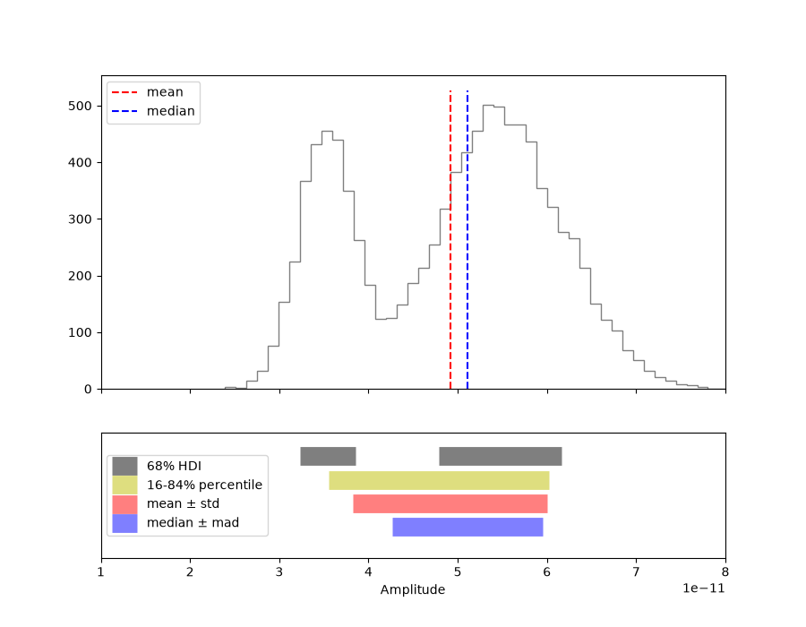

Note
Go to the end to download the full example code or to run this example in your browser via Binder.
Bayesian analysis with nested sampling#
A demonstration of a Bayesian analysis using the nested sampling technique.
Context#
1. Bayesian analysis#
Bayesian inference uses prior knowledge, in the form of a prior distribution, in order to estimate posterior probabilities which we traditionally visualise in the form of corner plots. These distributions contain more information than a maximum likelihood fit as they reveal not only the “best model” but provide a more accurate representation of errors and correlation between parameters. In particular, non-Gaussian degeneracies are complex to estimate with a maximum likelihood approach.
2. Limitations of the Markov Chain Monte Carlo approach#
A well-known approach to estimate this posterior distribution is the Markov Chain Monte Carlo (MCMC). This uses an ensemble of walkers to produce a chain of samples that after a convergence period will reach a stationary state. Once convergence is reached, the successive elements of the chain are samples of the target posterior distribution. However, the weakness of the MCMC approach lies in the “Once convergence” part. If the walkers are started far from the best likelihood region, the convergence time can be long or never reached if the walkers fall in a local minima. The choice of the initialisation point can become critical for complex models with a high number of dimensions and the ability of these walkers to escape a local minimum or to accurately describe a complex likelihood space is not guaranteed.
3. Nested sampling approach#
To overcome these issues, the nested sampling (NS) algorithm has gained traction in physics and astronomy. It is a Monte Carlo algorithm for computing an integral of the likelihood function over the prior model parameter space introduced in Skilling, 2004. The method performs this integral by evolving a collection of points through the parameter space (see recent reviews from Ashton et al., 2022, and Buchner, 2023). Without going into too many details, one important specificity of the NS method is that it starts from the entire parameter space and evolves a collection of live points to map all minima (including multiple modes if any), whereas Markov Chain Monte Carlo methods require an initialisation point and the walkers will explore the local likelihood. The ability of these walkers to escape a local minimum or to accurately describe a complex likelihood space is not guaranteed. This is a fundamental difference with MCMC or Minuit which will only ever probe the vicinity along their minimisation paths and do not have an overview of the global likelihood landscape. The analysis using the NS framework is more CPU time consuming than a standard classical fit, but it provides the full posterior distribution for all parameters, which is out of reach with traditional fitting techniques (N*(N-1)/2 contour plots to generate). In addition, it is more robust to the choice of initialisation, requires less human intervention and is therefore readily integrated in pipeline analysis. In Gammapy, we used the NS implementation of the UltraNest package (see here for more information), one of the leading package in Astronomy (already used in Cosmology and in X-rays). For a nice visualisation of the NS method see here : sampling visualisation. And for a tutorial of UltraNest applied to X-ray fitting with concrete examples and questions see : BXA Tutorial.
Note: please cite UltraNest if used for a paper
If you are using the “UltraNest” library for a paper, please follow its citation scheme: Cite UltraNest.
Proposed approach#
In this example, we will perform a Bayesian analysis with multiple 1D spectra of the Crab nebula data and investigate their posterior distributions.
Setup#
As usual, we’ll start with some setup …
import matplotlib.pyplot as plt
import numpy as np
import astropy.units as u
from gammapy.datasets import Datasets
from gammapy.datasets import SpectrumDatasetOnOff
from gammapy.modeling.models import (
SkyModel,
UniformPrior,
LogUniformPrior,
)
from gammapy.modeling.sampler import Sampler
Loading the spectral datasets#
Here we will load a few Crab 1D spectral data for which we will do a fit.
Model definition#
Now we want to define the spectral model that will be fitted to the data. The Crab spectra will be fitted here with a simple powerlaw for simplicity.
model = SkyModel.create(spectral_model="pl", name="crab")
Warning
Priors definition: Unlike a traditional fit where priors on the parameters are optional, here it is inherent to the Bayesian approach and are therefore mandatory.
In this case we will set (min,max) prior that will define the
boundaries in which the sampling will be performed.
Note that it is usually recommended to use a LogUniformPrior for
the parameters that have a large amplitude range like the
amplitude parameter.
A UniformPrior means that the samples will be drawn with uniform
probability between the (min,max) values in the linear or log space
in the case of a LogUniformPrior.
model.spectral_model.amplitude.prior = LogUniformPrior(min=1e-12, max=1e-10)
model.spectral_model.index.prior = UniformPrior(min=1, max=5)
datasets.models = [model]
print(datasets.models)
DatasetModels
Component 0: SkyModel
Name : crab
Datasets names : None
Spectral model type : PowerLawSpectralModel
Spatial model type :
Temporal model type :
Parameters:
index : 2.000 +/- 0.00
amplitude : 1.00e-12 +/- 0.0e+00 1 / (TeV s cm2)
reference (frozen): 1.000 TeV
Defining the sampler and options#
As for the Fit object, the Sampler object can receive
different backend (although just one is available for now).
The Sampler comes with “reasonable” default parameters, but you can
change them via the sampler_opts dictionary.
Here is a short description of the most relevant parameters that you
could change :
live_points: minimum number of live points throughout the run. More points allow to discover multiple peaks if existing, but is slower. To test the Prior boundaries and for debugging, a lower number (~100) can be used before a production run with more points (~400 or more).frac_remain: the cut-off condition for the integration, set by the maximum allowed fraction of posterior mass left in the live points vs the dead points. High values (e.g., 0.5) are faster and can be used if the posterior distribution is a relatively simple shape. A low value (1e-1, 1e-2) is optimal for finding peaks, but slower.log_dir: directory where the output files will be stored. If set to None, no files will be written. If set to a string, a directory will be created containing the ongoing status of the run and final results. For time consuming analysis, it is highly recommended to use that option to monitor the run and restart it in case of a crash (withresume=True).
Important note: unlike the MCMC method, you don’t need to define the number of steps for which the sampler will run. The algorithm will automatically stop once a convergence criteria has been reached.
sampler_opts = {
"live_points": 300,
"frac_remain": 0.3,
"log_dir": None,
}
sampler = Sampler(backend="ultranest", sampler_opts=sampler_opts)
Next we can run the sampler on a given dataset. No options are accepted in the run method.
[ultranest] Sampling 300 live points from prior ...
Mono-modal Volume: ~exp(-3.87) * Expected Volume: exp(0.00) Quality: ok
index : +1.0|************************************************| +5.0
amplitude: +1.0e-12|******************************* *** ****** ** **| +1.0e-10
Z=-inf(0.00%) | Like=-3871.15..-60.20 [-3871.1500..-314.8733] | it/evals=0/301 eff=0.0000% N=300
Z=-552.4(0.00%) | Like=-545.33..-60.20 [-3871.1500..-314.8733] | it/evals=22/323 eff=95.6522% N=300
Z=-544.0(0.00%) | Like=-535.94..-60.20 [-3871.1500..-314.8733] | it/evals=30/331 eff=96.7742% N=300
Z=-523.3(0.00%) | Like=-517.19..-60.20 [-3871.1500..-314.8733] | it/evals=50/353 eff=94.3396% N=300
Z=-506.2(0.00%) | Like=-501.29..-60.20 [-3871.1500..-314.8733] | it/evals=60/366 eff=90.9091% N=300
Mono-modal Volume: ~exp(-3.89) * Expected Volume: exp(-0.22) Quality: ok
index : +1.0|************************************************| +5.0
amplitude: +1.0e-12|*********************************** *** ** *| +1.0e-10
Z=-494.2(0.00%) | Like=-487.50..-60.20 [-3871.1500..-314.8733] | it/evals=67/373 eff=91.7808% N=300
Z=-475.8(0.00%) | Like=-469.92..-60.20 [-3871.1500..-314.8733] | it/evals=84/395 eff=88.4211% N=300
Z=-469.5(0.00%) | Like=-463.59..-60.20 [-3871.1500..-314.8733] | it/evals=90/402 eff=88.2353% N=300
Z=-455.6(0.00%) | Like=-450.38..-60.20 [-3871.1500..-314.8733] | it/evals=108/424 eff=87.0968% N=300
Z=-442.1(0.00%) | Like=-436.35..-60.20 [-3871.1500..-314.8733] | it/evals=120/438 eff=86.9565% N=300
Mono-modal Volume: ~exp(-4.14) * Expected Volume: exp(-0.45) Quality: ok
index : +1.0|************************************************| +5.0
amplitude: +1.0e-12|*********************************** ****** *| +1.0e-10
Z=-426.5(0.00%) | Like=-419.57..-60.20 [-3871.1500..-314.8733] | it/evals=134/458 eff=84.8101% N=300
Z=-405.4(0.00%) | Like=-399.69..-60.20 [-3871.1500..-314.8733] | it/evals=150/475 eff=85.7143% N=300
Z=-384.2(0.00%) | Like=-378.01..-60.20 [-3871.1500..-314.8733] | it/evals=167/500 eff=83.5000% N=300
Z=-366.3(0.00%) | Like=-360.35..-60.20 [-3871.1500..-314.8733] | it/evals=180/519 eff=82.1918% N=300
Z=-340.3(0.00%) | Like=-333.03..-60.20 [-3871.1500..-314.8733] | it/evals=198/541 eff=82.1577% N=300
Mono-modal Volume: ~exp(-4.88) * Expected Volume: exp(-0.67) Quality: ok
index : +1.0| **********************************************| +5.0
amplitude: +1.0e-12| ********************************** ****** ***| +1.0e-10
Z=-336.9(0.00%) | Like=-330.24..-60.20 [-3871.1500..-314.8733] | it/evals=201/544 eff=82.3770% N=300
Z=-328.8(0.00%) | Like=-322.80..-60.20 [-3871.1500..-314.8733] | it/evals=210/553 eff=83.0040% N=300
Z=-310.5(0.00%) | Like=-303.55..-60.20 [-312.6514..-176.4063] | it/evals=224/576 eff=81.1594% N=300
Z=-291.9(0.00%) | Like=-286.50..-60.20 [-312.6514..-176.4063] | it/evals=240/593 eff=81.9113% N=300
Z=-276.8(0.00%) | Like=-265.66..-60.20 [-312.6514..-176.4063] | it/evals=257/617 eff=81.0726% N=300
Mono-modal Volume: ~exp(-4.88) Expected Volume: exp(-0.89) Quality: ok
index : +1.0| *******************************************| +5.0
amplitude: +1.0e-12| ********************************* ******* ****| +1.0e-10
Z=-266.4(0.00%) | Like=-260.55..-60.20 [-312.6514..-176.4063] | it/evals=270/635 eff=80.5970% N=300
Z=-254.8(0.00%) | Like=-248.65..-60.20 [-312.6514..-176.4063] | it/evals=287/657 eff=80.3922% N=300
Z=-247.3(0.00%) | Like=-240.50..-60.20 [-312.6514..-176.4063] | it/evals=300/676 eff=79.7872% N=300
Z=-234.6(0.00%) | Like=-227.07..-60.20 [-312.6514..-176.4063] | it/evals=317/698 eff=79.6482% N=300
Z=-226.0(0.00%) | Like=-219.11..-60.20 [-312.6514..-176.4063] | it/evals=330/713 eff=79.9031% N=300
Mono-modal Volume: ~exp(-4.98) * Expected Volume: exp(-1.12) Quality: ok
index : +1.0| ******************************************| +5.0
amplitude: +1.0e-12| ******************************** ******* ***| +1.0e-10
Z=-223.7(0.00%) | Like=-217.59..-59.80 [-312.6514..-176.4063] | it/evals=335/718 eff=80.1435% N=300
Z=-214.5(0.00%) | Like=-206.83..-59.80 [-312.6514..-176.4063] | it/evals=349/741 eff=79.1383% N=300
Z=-208.6(0.00%) | Like=-202.69..-59.80 [-312.6514..-176.4063] | it/evals=360/756 eff=78.9474% N=300
Z=-200.8(0.00%) | Like=-194.54..-59.39 [-312.6514..-176.4063] | it/evals=380/778 eff=79.4979% N=300
Z=-196.7(0.00%) | Like=-190.70..-59.39 [-312.6514..-176.4063] | it/evals=390/790 eff=79.5918% N=300
Mono-modal Volume: ~exp(-5.31) * Expected Volume: exp(-1.34) Quality: ok
index : +1.0| **************************************** | +5.0
amplitude: +1.0e-12| ****************************** ******* ****| +1.0e-10
Z=-192.0(0.00%) | Like=-185.72..-59.39 [-312.6514..-176.4063] | it/evals=402/810 eff=78.8235% N=300
Z=-186.3(0.00%) | Like=-180.50..-59.39 [-312.6514..-176.4063] | it/evals=418/832 eff=78.5714% N=300
Z=-185.7(0.00%) | Like=-179.61..-59.39 [-312.6514..-176.4063] | it/evals=420/834 eff=78.6517% N=300
Z=-180.6(0.00%) | Like=-174.27..-59.39 [-176.2838..-121.6953] | it/evals=437/856 eff=78.5971% N=300
Z=-176.8(0.00%) | Like=-171.09..-59.39 [-176.2838..-121.6953] | it/evals=449/880 eff=77.4138% N=300
Z=-176.6(0.00%) | Like=-170.90..-59.39 [-176.2838..-121.6953] | it/evals=450/881 eff=77.4527% N=300
Z=-171.3(0.00%) | Like=-164.51..-59.39 [-176.2838..-121.6953] | it/evals=466/903 eff=77.2803% N=300
Mono-modal Volume: ~exp(-5.51) * Expected Volume: exp(-1.56) Quality: ok
index : +1.0| ********************************* | +5.0
amplitude: +1.0e-12| ***************************** *********** | +1.0e-10
Z=-170.0(0.00%) | Like=-162.83..-59.39 [-176.2838..-121.6953] | it/evals=469/906 eff=77.3927% N=300
Z=-165.8(0.00%) | Like=-159.57..-59.39 [-176.2838..-121.6953] | it/evals=480/924 eff=76.9231% N=300
Z=-160.2(0.00%) | Like=-154.16..-59.39 [-176.2838..-121.6953] | it/evals=498/946 eff=77.0898% N=300
Z=-158.1(0.00%) | Like=-152.44..-59.39 [-176.2838..-121.6953] | it/evals=510/960 eff=77.2727% N=300
Z=-154.4(0.00%) | Like=-148.24..-59.39 [-176.2838..-121.6953] | it/evals=524/983 eff=76.7204% N=300
Mono-modal Volume: ~exp(-5.98) * Expected Volume: exp(-1.79) Quality: ok
index : +1.0| ****************************** | +5.0
amplitude: +1.0e-12| *************************************** | +1.0e-10
Z=-151.1(0.00%) | Like=-144.90..-59.39 [-176.2838..-121.6953] | it/evals=536/1002 eff=76.3533% N=300
Z=-150.3(0.00%) | Like=-144.54..-59.39 [-176.2838..-121.6953] | it/evals=540/1008 eff=76.2712% N=300
Z=-147.0(0.00%) | Like=-140.54..-59.39 [-176.2838..-121.6953] | it/evals=556/1030 eff=76.1644% N=300
Z=-143.4(0.00%) | Like=-137.60..-59.39 [-176.2838..-121.6953] | it/evals=570/1049 eff=76.1015% N=300
Z=-139.7(0.00%) | Like=-133.54..-59.39 [-176.2838..-121.6953] | it/evals=590/1071 eff=76.5240% N=300
Z=-137.0(0.00%) | Like=-130.84..-59.39 [-176.2838..-121.6953] | it/evals=600/1085 eff=76.4331% N=300
Mono-modal Volume: ~exp(-5.98) Expected Volume: exp(-2.01) Quality: ok
index : +1.0| ************************** +4.0 | +5.0
amplitude: +1.0e-12| ************************************ | +1.0e-10
Z=-135.3(0.00%) | Like=-129.29..-59.39 [-176.2838..-121.6953] | it/evals=609/1106 eff=75.5583% N=300
Z=-132.5(0.00%) | Like=-126.79..-59.39 [-176.2838..-121.6953] | it/evals=624/1129 eff=75.2714% N=300
Z=-131.8(0.00%) | Like=-125.73..-59.39 [-176.2838..-121.6953] | it/evals=630/1135 eff=75.4491% N=300
Z=-127.7(0.00%) | Like=-121.40..-59.39 [-121.5005..-91.5151] | it/evals=647/1159 eff=75.3201% N=300
Z=-126.2(0.00%) | Like=-120.49..-59.39 [-121.5005..-91.5151] | it/evals=657/1182 eff=74.4898% N=300
Z=-125.6(0.00%) | Like=-118.91..-59.39 [-121.5005..-91.5151] | it/evals=660/1186 eff=74.4921% N=300
Mono-modal Volume: ~exp(-6.44) * Expected Volume: exp(-2.23) Quality: ok
index : +1.0| +1.9 *********************** +3.8 | +5.0
amplitude: +1.0e-12| ******************************** | +1.0e-10
Z=-123.9(0.00%) | Like=-117.97..-59.39 [-121.5005..-91.5151] | it/evals=670/1204 eff=74.1150% N=300
Z=-119.9(0.00%) | Like=-113.51..-59.39 [-121.5005..-91.5151] | it/evals=688/1227 eff=74.2179% N=300
Z=-119.6(0.00%) | Like=-113.09..-59.39 [-121.5005..-91.5151] | it/evals=690/1229 eff=74.2734% N=300
Z=-117.0(0.00%) | Like=-111.01..-59.39 [-121.5005..-91.5151] | it/evals=708/1251 eff=74.4479% N=300
Z=-115.5(0.00%) | Like=-109.06..-59.09 [-121.5005..-91.5151] | it/evals=720/1270 eff=74.2268% N=300
Z=-112.8(0.00%) | Like=-106.35..-59.09 [-121.5005..-91.5151] | it/evals=736/1294 eff=74.0443% N=300
Mono-modal Volume: ~exp(-6.44) Expected Volume: exp(-2.46) Quality: ok
index : +1.0| +2.0 ********************** +3.7 | +5.0
amplitude: +1.0e-12| *************************** ** | +1.0e-10
Z=-111.0(0.00%) | Like=-104.66..-59.09 [-121.5005..-91.5151] | it/evals=750/1312 eff=74.1107% N=300
Z=-108.9(0.00%) | Like=-102.91..-59.09 [-121.5005..-91.5151] | it/evals=767/1335 eff=74.1063% N=300
Z=-107.1(0.00%) | Like=-100.62..-59.09 [-121.5005..-91.5151] | it/evals=780/1351 eff=74.2150% N=300
Z=-104.8(0.00%) | Like=-98.60..-58.78 [-121.5005..-91.5151] | it/evals=797/1375 eff=74.1395% N=300
Mono-modal Volume: ~exp(-6.54) * Expected Volume: exp(-2.68) Quality: ok
index : +1.0| +2.1 ******************* +3.6 | +5.0
amplitude: +1.0e-12| ************************** +7.5e-11 | +1.0e-10
Z=-103.9(0.00%) | Like=-96.78..-58.78 [-121.5005..-91.5151] | it/evals=804/1382 eff=74.3068% N=300
Z=-102.8(0.00%) | Like=-96.25..-58.78 [-121.5005..-91.5151] | it/evals=810/1391 eff=74.2438% N=300
Z=-100.3(0.00%) | Like=-94.03..-58.78 [-121.5005..-91.5151] | it/evals=828/1414 eff=74.3268% N=300
Z=-99.2(0.00%) | Like=-92.96..-58.78 [-121.5005..-91.5151] | it/evals=840/1438 eff=73.8137% N=300
Z=-97.2(0.00%) | Like=-90.94..-58.78 [-91.4936..-75.5922] | it/evals=859/1460 eff=74.0517% N=300
Z=-96.2(0.00%) | Like=-89.93..-58.78 [-91.4936..-75.5922] | it/evals=870/1472 eff=74.2321% N=300
Mono-modal Volume: ~exp(-6.62) * Expected Volume: exp(-2.90) Quality: ok
index : +1.0| +2.1 ***************** +3.5 | +5.0
amplitude: +1.0e-12| +2.5e-11 ************************ +7.2e-11 | +1.0e-10
Z=-96.1(0.00%) | Like=-89.90..-58.78 [-91.4936..-75.5922] | it/evals=871/1477 eff=74.0017% N=300
Z=-94.8(0.00%) | Like=-88.17..-58.77 [-91.4936..-75.5922] | it/evals=888/1499 eff=74.0617% N=300
Z=-93.4(0.00%) | Like=-86.76..-58.77 [-91.4936..-75.5922] | it/evals=900/1517 eff=73.9523% N=300
Z=-91.5(0.00%) | Like=-85.06..-58.77 [-91.4936..-75.5922] | it/evals=915/1541 eff=73.7309% N=300
Z=-89.8(0.00%) | Like=-83.25..-58.77 [-91.4936..-75.5922] | it/evals=929/1564 eff=73.4968% N=300
Z=-89.7(0.00%) | Like=-83.20..-58.77 [-91.4936..-75.5922] | it/evals=930/1565 eff=73.5178% N=300
Mono-modal Volume: ~exp(-6.97) * Expected Volume: exp(-3.13) Quality: ok
index : +1.0| +2.2 *************** +3.3 | +5.0
amplitude: +1.0e-12| +2.6e-11 ********************* +6.8e-11 | +1.0e-10
Z=-89.1(0.00%) | Like=-82.79..-58.77 [-91.4936..-75.5922] | it/evals=938/1587 eff=72.8827% N=300
Z=-88.0(0.00%) | Like=-81.67..-58.77 [-91.4936..-75.5922] | it/evals=952/1609 eff=72.7273% N=300
Z=-87.5(0.00%) | Like=-81.51..-58.77 [-91.4936..-75.5922] | it/evals=960/1620 eff=72.7273% N=300
Z=-86.8(0.00%) | Like=-80.80..-58.77 [-91.4936..-75.5922] | it/evals=974/1643 eff=72.5242% N=300
Z=-86.0(0.00%) | Like=-79.84..-58.77 [-91.4936..-75.5922] | it/evals=990/1665 eff=72.5275% N=300
Z=-85.1(0.00%) | Like=-78.88..-58.77 [-91.4936..-75.5922] | it/evals=1004/1688 eff=72.3343% N=300
Mono-modal Volume: ~exp(-7.10) * Expected Volume: exp(-3.35) Quality: ok
index : +1.0| +2.2 ************** +3.3 | +5.0
amplitude: +1.0e-12| +2.8e-11 ******************* +6.5e-11 | +1.0e-10
Z=-85.0(0.00%) | Like=-78.77..-58.77 [-91.4936..-75.5922] | it/evals=1005/1689 eff=72.3542% N=300
Z=-84.0(0.00%) | Like=-77.72..-58.77 [-91.4936..-75.5922] | it/evals=1020/1708 eff=72.4432% N=300
Z=-83.2(0.00%) | Like=-76.64..-58.77 [-91.4936..-75.5922] | it/evals=1036/1733 eff=72.2959% N=300
Z=-82.2(0.00%) | Like=-75.59..-58.77 [-75.5903..-67.2939] | it/evals=1050/1751 eff=72.3639% N=300
Z=-81.5(0.00%) | Like=-75.14..-58.77 [-75.5903..-67.2939] | it/evals=1062/1775 eff=72.0000% N=300
Mono-modal Volume: ~exp(-7.76) * Expected Volume: exp(-3.57) Quality: ok
index : +1.0| +2.3 ************ +3.2 | +5.0
amplitude: +1.0e-12| +3.0e-11 ***************** +6.3e-11 | +1.0e-10
Z=-80.9(0.00%) | Like=-74.56..-58.77 [-75.5903..-67.2939] | it/evals=1072/1789 eff=71.9946% N=300
Z=-80.5(0.00%) | Like=-74.19..-58.77 [-75.5903..-67.2939] | it/evals=1080/1803 eff=71.8563% N=300
Z=-79.7(0.00%) | Like=-73.60..-58.77 [-75.5903..-67.2939] | it/evals=1098/1825 eff=72.0000% N=300
Z=-79.2(0.00%) | Like=-72.60..-58.77 [-75.5903..-67.2939] | it/evals=1110/1838 eff=72.1717% N=300
Z=-78.5(0.00%) | Like=-72.16..-58.77 [-75.5903..-67.2939] | it/evals=1125/1862 eff=72.0230% N=300
Z=-78.0(0.00%) | Like=-71.75..-58.77 [-75.5903..-67.2939] | it/evals=1138/1885 eff=71.7981% N=300
Mono-modal Volume: ~exp(-7.76) Expected Volume: exp(-3.80) Quality: ok
index : +1.0| +2.3 *********** +3.1 | +5.0
amplitude: +1.0e-12| +3.1e-11 **************** +6.1e-11 | +1.0e-10
Z=-77.9(0.00%) | Like=-71.73..-58.77 [-75.5903..-67.2939] | it/evals=1140/1888 eff=71.7884% N=300
Z=-77.5(0.00%) | Like=-71.44..-58.77 [-75.5903..-67.2939] | it/evals=1151/1911 eff=71.4463% N=300
Z=-77.0(0.00%) | Like=-70.84..-58.77 [-75.5903..-67.2939] | it/evals=1167/1933 eff=71.4636% N=300
Z=-76.9(0.00%) | Like=-70.80..-58.77 [-75.5903..-67.2939] | it/evals=1170/1937 eff=71.4722% N=300
Z=-76.3(0.00%) | Like=-69.82..-58.77 [-75.5903..-67.2939] | it/evals=1189/1961 eff=71.5834% N=300
Z=-75.9(0.00%) | Like=-69.37..-58.77 [-75.5903..-67.2939] | it/evals=1200/1980 eff=71.4286% N=300
Mono-modal Volume: ~exp(-7.76) Expected Volume: exp(-4.02) Quality: ok
index : +1.0| +2.3 ********** +3.1 | +5.0
amplitude: +1.0e-12| +3.2e-11 ************* +5.8e-11 | +1.0e-10
Z=-75.3(0.00%) | Like=-68.88..-58.77 [-75.5903..-67.2939] | it/evals=1213/2001 eff=71.3110% N=300
Z=-74.9(0.01%) | Like=-68.35..-58.77 [-75.5903..-67.2939] | it/evals=1224/2024 eff=70.9977% N=300
Z=-74.7(0.01%) | Like=-68.10..-58.77 [-75.5903..-67.2939] | it/evals=1230/2034 eff=70.9343% N=300
Z=-74.2(0.01%) | Like=-67.71..-58.77 [-75.5903..-67.2939] | it/evals=1242/2058 eff=70.6485% N=300
Z=-73.8(0.02%) | Like=-67.34..-58.77 [-75.5903..-67.2939] | it/evals=1254/2081 eff=70.4099% N=300
Z=-73.7(0.02%) | Like=-67.28..-58.77 [-67.2766..-65.4667] | it/evals=1260/2087 eff=70.5092% N=300
Mono-modal Volume: ~exp(-8.60) * Expected Volume: exp(-4.24) Quality: ok
index : +1.0| +2.4 ********* +3.0 | +5.0
amplitude: +1.0e-12| +3.3e-11 ************* +5.7e-11 | +1.0e-10
Z=-73.3(0.03%) | Like=-66.99..-58.77 [-67.2766..-65.4667] | it/evals=1273/2107 eff=70.4483% N=300
Z=-72.9(0.04%) | Like=-66.64..-58.77 [-67.2766..-65.4667] | it/evals=1290/2127 eff=70.6076% N=300
Z=-72.5(0.06%) | Like=-66.38..-58.77 [-67.2766..-65.4667] | it/evals=1307/2149 eff=70.6869% N=300
Z=-72.3(0.08%) | Like=-66.13..-58.77 [-67.2766..-65.4667] | it/evals=1320/2169 eff=70.6260% N=300
Z=-72.0(0.11%) | Like=-65.76..-58.77 [-67.2766..-65.4667] | it/evals=1336/2191 eff=70.6504% N=300
Mono-modal Volume: ~exp(-8.60) Expected Volume: exp(-4.47) Quality: ok
index : +1.0| +2.4 ********* +3.0 | +5.0
amplitude: +1.0e-12| +3.4e-11 ************ +5.6e-11 | +1.0e-10
Z=-71.7(0.14%) | Like=-65.40..-58.77 [-65.4031..-65.1538] | it/evals=1349/2213 eff=70.5175% N=300
Z=-71.7(0.14%) | Like=-65.38..-58.77 [-65.4031..-65.1538] | it/evals=1350/2214 eff=70.5329% N=300
Z=-71.4(0.20%) | Like=-64.98..-58.77 [-65.0226..-64.9765] | it/evals=1366/2236 eff=70.5579% N=300
Z=-71.1(0.27%) | Like=-64.61..-58.76 [-64.6300..-64.6128] | it/evals=1380/2254 eff=70.6244% N=300
Z=-70.7(0.39%) | Like=-64.28..-58.76 [-64.2943..-64.2824] | it/evals=1398/2276 eff=70.7490% N=300
Mono-modal Volume: ~exp(-8.81) * Expected Volume: exp(-4.69) Quality: ok
index : +1.0| +2.4 ******* +3.0 | +5.0
amplitude: +1.0e-12| +3.6e-11 *********** +5.5e-11 | +1.0e-10
Z=-70.5(0.47%) | Like=-64.04..-58.76 [-64.0371..-64.0112] | it/evals=1407/2295 eff=70.5263% N=300
Z=-70.5(0.50%) | Like=-63.96..-58.76 [-63.9580..-63.9292] | it/evals=1410/2298 eff=70.5706% N=300
Z=-70.1(0.70%) | Like=-63.75..-58.76 [-63.7503..-63.7390] | it/evals=1428/2322 eff=70.6231% N=300
Z=-69.9(0.85%) | Like=-63.58..-58.76 [-63.6068..-63.5817] | it/evals=1440/2337 eff=70.6922% N=300
Z=-69.7(1.12%) | Like=-63.33..-58.76 [-63.3298..-63.3205]*| it/evals=1457/2359 eff=70.7625% N=300
Z=-69.5(1.37%) | Like=-63.10..-58.76 [-63.1177..-63.1037] | it/evals=1470/2377 eff=70.7752% N=300
Mono-modal Volume: ~exp(-8.81) Expected Volume: exp(-4.91) Quality: ok
index : +1.0| +2.4 ******* +2.9 | +5.0
amplitude: +1.0e-12| +3.6e-11 ********* +5.4e-11 | +1.0e-10
Z=-69.3(1.73%) | Like=-62.91..-58.76 [-62.9119..-62.9086]*| it/evals=1485/2401 eff=70.6806% N=300
Z=-69.1(2.01%) | Like=-62.75..-58.76 [-62.7465..-62.7428]*| it/evals=1497/2424 eff=70.4802% N=300
Z=-69.1(2.10%) | Like=-62.73..-58.76 [-62.7313..-62.7211] | it/evals=1500/2427 eff=70.5219% N=300
Z=-68.9(2.42%) | Like=-62.51..-58.76 [-62.5551..-62.5141] | it/evals=1512/2452 eff=70.2602% N=300
Z=-68.8(2.84%) | Like=-62.33..-58.76 [-62.3786..-62.3272] | it/evals=1525/2475 eff=70.1149% N=300
Z=-68.7(3.03%) | Like=-62.29..-58.76 [-62.2933..-62.2933]*| it/evals=1530/2485 eff=70.0229% N=300
Mono-modal Volume: ~exp(-9.11) * Expected Volume: exp(-5.14) Quality: ok
index : +1.0| +2.5 ****** +2.9 | +5.0
amplitude: +1.0e-12| +3.7e-11 ******** +5.2e-11 | +1.0e-10
Z=-68.6(3.42%) | Like=-62.19..-58.76 [-62.1917..-62.1800] | it/evals=1541/2500 eff=70.0455% N=300
Z=-68.4(4.11%) | Like=-62.01..-58.76 [-62.0078..-62.0024]*| it/evals=1557/2522 eff=70.0720% N=300
Z=-68.4(4.25%) | Like=-61.97..-58.76 [-61.9694..-61.9660]*| it/evals=1560/2525 eff=70.1124% N=300
Z=-68.2(5.11%) | Like=-61.84..-58.76 [-61.8437..-61.8356]*| it/evals=1576/2547 eff=70.1380% N=300
Z=-68.1(5.87%) | Like=-61.72..-58.76 [-61.7244..-61.7129] | it/evals=1590/2567 eff=70.1367% N=300
Mono-modal Volume: ~exp(-9.53) * Expected Volume: exp(-5.36) Quality: ok
index : +1.0| +2.5 ****** +2.9 | +5.0
amplitude: +1.0e-12| +3.7e-11 ******** +5.2e-11 | +1.0e-10
Z=-67.9(7.00%) | Like=-61.63..-58.76 [-61.6281..-61.6156] | it/evals=1608/2590 eff=70.2183% N=300
Z=-67.8(7.70%) | Like=-61.51..-58.76 [-61.5192..-61.5090] | it/evals=1620/2604 eff=70.3125% N=300
Z=-67.7(8.81%) | Like=-61.42..-58.76 [-61.4229..-61.4054] | it/evals=1638/2626 eff=70.4213% N=300
Z=-67.6(9.71%) | Like=-61.29..-58.76 [-61.3046..-61.2944] | it/evals=1650/2640 eff=70.5128% N=300
Z=-67.5(10.62%) | Like=-61.22..-58.76 [-61.2202..-61.2173]*| it/evals=1663/2664 eff=70.3469% N=300
Mono-modal Volume: ~exp(-9.53) Expected Volume: exp(-5.58) Quality: ok
index : +1.0| +2.5 ****** +2.9 | +5.0
amplitude: +1.0e-12| +3.9e-11 ******* +5.1e-11 | +1.0e-10
Z=-67.4(11.74%) | Like=-61.10..-58.76 [-61.1222..-61.0961] | it/evals=1676/2685 eff=70.2725% N=300
Z=-67.4(12.06%) | Like=-61.08..-58.76 [-61.0769..-61.0676]*| it/evals=1680/2689 eff=70.3223% N=300
Z=-67.3(13.64%) | Like=-60.91..-58.76 [-60.9449..-60.9115] | it/evals=1698/2712 eff=70.3980% N=300
Z=-67.2(14.55%) | Like=-60.81..-58.76 [-60.8076..-60.8057]*| it/evals=1710/2726 eff=70.4864% N=300
Z=-67.1(15.86%) | Like=-60.68..-58.76 [-60.6891..-60.6773] | it/evals=1725/2748 eff=70.4657% N=300
Z=-67.0(17.25%) | Like=-60.60..-58.76 [-60.6048..-60.5881] | it/evals=1740/2769 eff=70.4739% N=300
Mono-modal Volume: ~exp(-10.14) * Expected Volume: exp(-5.81) Quality: ok
index : +1.0| +2.5 **** +2.8 | +5.0
amplitude: +1.0e-12| +3.9e-11 ****** +5.0e-11 | +1.0e-10
Z=-67.0(17.43%) | Like=-60.58..-58.76 [-60.5796..-60.5790]*| it/evals=1742/2771 eff=70.4978% N=300
Z=-66.9(19.24%) | Like=-60.51..-58.76 [-60.5109..-60.5106]*| it/evals=1760/2793 eff=70.5977% N=300
Z=-66.8(20.21%) | Like=-60.46..-58.76 [-60.4553..-60.4469]*| it/evals=1770/2804 eff=70.6869% N=300
Z=-66.7(21.73%) | Like=-60.42..-58.76 [-60.4175..-60.4069] | it/evals=1784/2827 eff=70.5975% N=300
Z=-66.7(23.34%) | Like=-60.31..-58.76 [-60.3111..-60.3067]*| it/evals=1799/2849 eff=70.5767% N=300
Z=-66.7(23.45%) | Like=-60.31..-58.76 [-60.3067..-60.3066]*| it/evals=1800/2850 eff=70.5882% N=300
Mono-modal Volume: ~exp(-10.14) Expected Volume: exp(-6.03) Quality: ok
index : +1.0| +2.5 **** +2.8 | +5.0
amplitude: +1.0e-12| +3.9e-11 ****** +5.0e-11 | +1.0e-10
Z=-66.6(25.22%) | Like=-60.25..-58.76 [-60.2456..-60.2444]*| it/evals=1816/2872 eff=70.6065% N=300
Z=-66.5(26.74%) | Like=-60.18..-58.76 [-60.1814..-60.1810]*| it/evals=1830/2889 eff=70.6837% N=300
Z=-66.5(28.67%) | Like=-60.10..-58.76 [-60.1024..-60.0986]*| it/evals=1847/2912 eff=70.7121% N=300
Z=-66.4(30.24%) | Like=-60.07..-58.76 [-60.0650..-60.0582]*| it/evals=1860/2928 eff=70.7763% N=300
Z=-66.4(31.74%) | Like=-60.02..-58.76 [-60.0152..-60.0148]*| it/evals=1874/2951 eff=70.6903% N=300
Mono-modal Volume: ~exp(-10.14) Expected Volume: exp(-6.25) Quality: ok
index : +1.0| +2.5 **** +2.8 | +5.0
amplitude: +1.0e-12| +4.0e-11 ****** +4.9e-11 | +1.0e-10
Z=-66.3(33.12%) | Like=-59.97..-58.75 [-59.9750..-59.9705]*| it/evals=1887/2972 eff=70.6213% N=300
Z=-66.3(33.44%) | Like=-59.97..-58.75 [-59.9678..-59.9674]*| it/evals=1890/2977 eff=70.6014% N=300
Z=-66.2(35.44%) | Like=-59.90..-58.75 [-59.9025..-59.9004]*| it/evals=1906/2999 eff=70.6187% N=300
Z=-66.2(37.11%) | Like=-59.85..-58.75 [-59.8507..-59.8472]*| it/evals=1920/3017 eff=70.6662% N=300
Z=-66.2(39.00%) | Like=-59.81..-58.75 [-59.8067..-59.8051]*| it/evals=1936/3039 eff=70.6827% N=300
Mono-modal Volume: ~exp(-10.44) * Expected Volume: exp(-6.48) Quality: ok
index : +1.0| +2.6 **** +2.8 | +5.0
amplitude: +1.0e-12| +4.0e-11 ***** +4.9e-11 | +1.0e-10
Z=-66.1(39.81%) | Like=-59.78..-58.75 [-59.7958..-59.7828] | it/evals=1943/3047 eff=70.7317% N=300
Z=-66.1(40.73%) | Like=-59.75..-58.75 [-59.7536..-59.7491]*| it/evals=1950/3054 eff=70.8061% N=300
Z=-66.1(42.76%) | Like=-59.71..-58.75 [-59.7088..-59.7077]*| it/evals=1968/3076 eff=70.8934% N=300
Z=-66.0(43.94%) | Like=-59.67..-58.75 [-59.6719..-59.6708]*| it/evals=1980/3096 eff=70.8155% N=300
Z=-66.0(46.07%) | Like=-59.64..-58.75 [-59.6447..-59.6435]*| it/evals=1998/3119 eff=70.8762% N=300
Mono-modal Volume: ~exp(-10.44) Expected Volume: exp(-6.70) Quality: ok
index : +1.0| +2.6 **** +2.8 | +5.0
amplitude: +1.0e-12| +4.0e-11 ***** +4.8e-11 | +1.0e-10
Z=-66.0(47.29%) | Like=-59.61..-58.75 [-59.6122..-59.6091]*| it/evals=2010/3141 eff=70.7497% N=300
Z=-65.9(48.87%) | Like=-59.58..-58.75 [-59.5842..-59.5836]*| it/evals=2025/3165 eff=70.6806% N=300
Z=-65.9(50.48%) | Like=-59.53..-58.75 [-59.5336..-59.5300]*| it/evals=2039/3188 eff=70.6025% N=300
Z=-65.9(50.59%) | Like=-59.53..-58.75 [-59.5300..-59.5299]*| it/evals=2040/3189 eff=70.6127% N=300
Z=-65.9(52.27%) | Like=-59.49..-58.75 [-59.4923..-59.4922]*| it/evals=2055/3211 eff=70.5943% N=300
Z=-65.8(53.67%) | Like=-59.45..-58.75 [-59.4489..-59.4484]*| it/evals=2069/3234 eff=70.5181% N=300
Z=-65.8(53.77%) | Like=-59.45..-58.75 [-59.4484..-59.4472]*| it/evals=2070/3235 eff=70.5281% N=300
Mono-modal Volume: ~exp(-10.51) * Expected Volume: exp(-6.92) Quality: ok
index : +1.0| +2.6 **** +2.8 | +5.0
amplitude: +1.0e-12| +4.1e-11 **** +4.8e-11 | +1.0e-10
Z=-65.8(54.51%) | Like=-59.44..-58.75 [-59.4416..-59.4404]*| it/evals=2077/3249 eff=70.4307% N=300
Z=-65.8(56.63%) | Like=-59.39..-58.75 [-59.3873..-59.3846]*| it/evals=2097/3271 eff=70.5823% N=300
Z=-65.8(56.95%) | Like=-59.37..-58.75 [-59.3712..-59.3712]*| it/evals=2100/3276 eff=70.5645% N=300
Z=-65.7(58.33%) | Like=-59.34..-58.75 [-59.3413..-59.3396]*| it/evals=2113/3299 eff=70.4568% N=300
Z=-65.7(59.96%) | Like=-59.32..-58.75 [-59.3173..-59.3170]*| it/evals=2129/3321 eff=70.4734% N=300
Z=-65.7(60.07%) | Like=-59.32..-58.75 [-59.3170..-59.3159]*| it/evals=2130/3322 eff=70.4831% N=300
Mono-modal Volume: ~exp(-10.53) * Expected Volume: exp(-7.15) Quality: ok
index : +1.0| +2.6 **** +2.8 | +5.0
amplitude: +1.0e-12| +4.1e-11 **** +4.8e-11 | +1.0e-10
Z=-65.7(61.41%) | Like=-59.29..-58.75 [-59.2894..-59.2861]*| it/evals=2144/3338 eff=70.5727% N=300
Z=-65.7(62.93%) | Like=-59.27..-58.75 [-59.2708..-59.2692]*| it/evals=2160/3360 eff=70.5882% N=300
Z=-65.7(64.01%) | Like=-59.25..-58.75 [-59.2485..-59.2482]*| it/evals=2172/3384 eff=70.4280% N=300
Z=-65.6(65.65%) | Like=-59.21..-58.75 [-59.2088..-59.2070]*| it/evals=2190/3404 eff=70.5541% N=300
Z=-65.6(66.93%) | Like=-59.19..-58.75 [-59.1854..-59.1840]*| it/evals=2205/3427 eff=70.5149% N=300
Mono-modal Volume: ~exp(-11.65) * Expected Volume: exp(-7.37) Quality: ok
index : +1.0| +2.6 ** +2.7 | +5.0
amplitude: +1.0e-12| +4.2e-11 **** +4.7e-11 | +1.0e-10
Z=-65.6(67.42%) | Like=-59.18..-58.75 [-59.1777..-59.1777]*| it/evals=2211/3436 eff=70.5038% N=300
Z=-65.6(68.20%) | Like=-59.17..-58.75 [-59.1655..-59.1639]*| it/evals=2220/3453 eff=70.4091% N=300
Z=-65.6(69.57%) | Like=-59.15..-58.75 [-59.1467..-59.1465]*| it/evals=2236/3475 eff=70.4252% N=300
[ultranest] Explored until L=-6e+01
[ultranest] Likelihood function evaluations: 3483
[ultranest] logZ = -65.22 +- 0.09384
[ultranest] Effective samples strategy satisfied (ESS = 1025.6, need >400)
[ultranest] Posterior uncertainty strategy is satisfied (KL: 0.46+-0.09 nat, need <0.50 nat)
[ultranest] Evidency uncertainty strategy is satisfied (dlogz=0.28, need <0.5)
[ultranest] logZ error budget: single: 0.13 bs:0.09 tail:0.26 total:0.28 required:<0.50
[ultranest] done iterating.
logZ = -65.207 +- 0.320
single instance: logZ = -65.207 +- 0.134
bootstrapped : logZ = -65.219 +- 0.184
tail : logZ = +- 0.262
insert order U test : converged: True correlation: inf iterations
index : 2.382 │ ▁▁▁▁▁▂▂▃▃▄▅▅▅▆▇▇▆▇▇▇▅▄▄▃▃▂▁▁▁▁▁▁▁▁ ▁▁ │3.054 2.677 +- 0.091
amplitude : 0.0000000000333│ ▁ ▁▁▁▁▁▂▂▄▄▄▅▆▅▇▇▇▇▆▅▄▃▄▂▃▂▂▁▁▁ ▁▁▁▁ │0.0000000000566 0.0000000000445 +- 0.0000000000031
Understanding the outputs#
In the Jupyter notebook, you should be able to see an interactive visualisation of how the parameter space shrinks which starts from the (min,max) shrinks down towards the optimal parameters.
The output above is filled with interesting information. Here we provide a short description of the most relevant information provided above. For more detailed information see the UltraNest docs.
During the sampling
Z=-68.8(0.53%) | Like=-63.96..-58.75 [-63.9570..-63.9539]*| it/evals=640/1068 eff=73.7327% N=300
Some important information here is:
Progress (0.53%): the completed fraction of the integral. This is not a time progress bar. Stays at zero for a good fraction of the run.
Efficiency (eff value) of the sampling: this indicates out of the proposed new points, how many were accepted. If your efficiency is too small (<<1%), maybe you should revise your priors (e.g use a LogUniform prior for the normalisation).
Final outputs
The final lines indicate that all three “convergence” strategies are satisfied (samples, posterior uncertainty, and evidence uncertainty).
logZ = -65.104 +- 0.292
The main goal of the Nested sampling algorithm is to estimate Z (the Bayesian evidence) which is given above together with an uncertainty. In a similar way to deltaLogLike and deltaAIC, deltaLogZ values can be used for model comparison. For more information see : on the use of the evidence for model comparison. An interesting comparison of the efficiency and false discovery rate of model selection with deltaLogLike and deltaLogZ is given in Appendix C of Buchner et al., 2014.
Results stored on disk
if log_dir is set to a name where the results will be stored, then
a directory is created containing many useful results and plots.
A description of these outputs is given in the Ultranest
docs.
Results#
Within a Bayesian analysis, the concept of best-fit has to be viewed differently from what is done in a gradient descent fit.
The output of the Bayesian analysis is the posterior distribution and there is no “best-fit” output. One has to define, based on the posteriors, what we want to consider as “best-fit” and several options are possible:
the mean of the distribution
the median
the lowest likelihood value
By default the DatasetModels will be updated with the mean of
the posterior distributions.
print(result_joint.models)
DatasetModels
Component 0: SkyModel
Name : crab
Datasets names : None
Spectral model type : PowerLawSpectralModel
Spatial model type :
Temporal model type :
Parameters:
index : 2.677 +/- 0.09
amplitude : 4.45e-11 +/- 3.1e-12 1 / (TeV s cm2)
reference (frozen): 1.000 TeV
The Sampler class returns a very rich dictionary.
The most “standard” information about the posterior distributions can
be found in :
print(result_joint.sampler_results["posterior"])
{'mean': [2.677015902390003, 4.4507552656945613e-11], 'stdev': [0.09119025197160045, 3.0898892389782083e-12], 'median': [2.6780757926856396, 4.4512322220094685e-11], 'errlo': [2.579305708964359, 4.142566029369218e-11], 'errup': [2.769881054881485, 4.755526970580829e-11], 'information_gain_bits': [2.6675751695624577, 3.0794184183554996]}
Besides mean, errors, etc, an interesting value is the
information gain which estimates how much the posterior
distribution has shrunk with respect to the prior (i.e. how much
we’ve learned). A value < 1 means that the parameter is poorly
constrained within the prior range (we haven’t learned much with respect to our prior assumption).
For a physical interpretation of the information gain see this
example.
The SamplerResult dictionary contains also other interesting
information :
print(result_joint.sampler_results.keys())
dict_keys(['niter', 'logz', 'logzerr', 'logz_bs', 'logz_single', 'logzerr_tail', 'logzerr_bs', 'ess', 'H', 'Herr', 'posterior', 'weighted_samples', 'samples', 'maximum_likelihood', 'ncall', 'paramnames', 'logzerr_single', 'insertion_order_MWW_test'])
Of particular interest, the samples used in the process to approximate the posterior distribution can be accessed via :
for i, n in enumerate(model.parameters.free_parameters.names):
s = result_joint.samples[:, i]
fig, ax = plt.subplots()
ax.hist(s, bins=30)
ax.axvline(np.mean(s), ls="--", color="red")
ax.set_xlabel(n)
plt.show()


While the above plots are interesting, the real strength of the Bayesian analysis is to visualise all parameters correlations which is usually done using “corner plots”. Ultranest corner plot function is a wrapper around the corner package. See the above link for optional keywords. Other packages exist for corner plots, like chainconsumer which is discussed later in this tutorial.
from ultranest.plot import cornerplot
cornerplot(
result_joint.sampler_results,
plot_datapoints=True,
plot_density=True,
bins=20,
title_fmt=".2e",
smooth=False,
)
plt.show()

Spectral model error band from samples#
To compute the spectral error band (“butterfly plots”), we will directly use the samples of the posterior distribution. This is more robust as compared to the traditional method of using the covariance matrix of the parameters which implicitly assumes Gaussian errors while for the posterior distribution there is no shape assumed. This difference can become significant when the parameter errors are non-Gaussian. For this we will need to convert the list of samples back to the spectral model parameters with the relevant units (e.g. normalisation units).
def get_samples_from_posterior(spectral_model, results):
"""
Create a list of spectral parameters with correct units
from the unitless parameters returned by the sampler.
"""
n_samples = results.samples.shape[0]
samples = []
for p in spectral_model.parameters:
try:
idx = spectral_model.parameters.free_unique_parameters.index(p)
samples.append(results.samples[:, idx] * p.unit)
except ValueError:
samples.append(np.ones(n_samples) * p.quantity)
return samples
samples = get_samples_from_posterior(datasets.models[0].spectral_model, result_joint)
Next we can provide these samples to the plot_error
method.

Individual run analysis#
Now we’ll analyse several Crab runs individually so that we can compare them.
result_0 = sampler.run(datasets[0])
result_1 = sampler.run(datasets[1])
result_2 = sampler.run(datasets[2])
[ultranest] Sampling 300 live points from prior ...
Mono-modal Volume: ~exp(-4.19) * Expected Volume: exp(0.00) Quality: ok
index : +1.0|************************************************| +5.0
amplitude: +1.0e-12|**************************************** * *| +1.0e-10
Z=-inf(0.00%) | Like=-950.34..-20.65 [-950.3378..-105.1680] | it/evals=0/301 eff=0.0000% N=300
Z=-177.1(0.00%) | Like=-172.24..-20.65 [-950.3378..-105.1680] | it/evals=30/333 eff=90.9091% N=300
Z=-166.2(0.00%) | Like=-161.37..-20.65 [-950.3378..-105.1680] | it/evals=60/370 eff=85.7143% N=300
Mono-modal Volume: ~exp(-4.19) Expected Volume: exp(-0.22) Quality: ok
index : +1.0| ***********************************************| +5.0
amplitude: +1.0e-12|************************************ *** ** *| +1.0e-10
Z=-156.4(0.00%) | Like=-151.02..-20.65 [-950.3378..-105.1680] | it/evals=90/405 eff=85.7143% N=300
Z=-145.4(0.00%) | Like=-140.64..-20.65 [-950.3378..-105.1680] | it/evals=120/441 eff=85.1064% N=300
Mono-modal Volume: ~exp(-4.33) * Expected Volume: exp(-0.45) Quality: ok
index : +1.0| **********************************************| +5.0
amplitude: +1.0e-12|************************************ *** ** *| +1.0e-10
Z=-142.2(0.00%) | Like=-137.04..-20.65 [-950.3378..-105.1680] | it/evals=134/464 eff=81.7073% N=300
Z=-138.1(0.00%) | Like=-132.87..-20.65 [-950.3378..-105.1680] | it/evals=150/488 eff=79.7872% N=300
Z=-126.8(0.00%) | Like=-121.69..-20.65 [-950.3378..-105.1680] | it/evals=180/521 eff=81.4480% N=300
Mono-modal Volume: ~exp(-4.45) * Expected Volume: exp(-0.67) Quality: ok
index : +1.0| **********************************************| +5.0
amplitude: +1.0e-12| *********************************** *** *** *| +1.0e-10
Z=-120.1(0.00%) | Like=-114.77..-20.65 [-950.3378..-105.1680] | it/evals=201/552 eff=79.7619% N=300
Z=-117.3(0.00%) | Like=-112.28..-20.65 [-950.3378..-105.1680] | it/evals=210/562 eff=80.1527% N=300
Z=-105.2(0.00%) | Like=-99.81..-20.65 [-105.0760..-66.8307] | it/evals=238/603 eff=78.5479% N=300
Z=-104.6(0.00%) | Like=-99.15..-20.65 [-105.0760..-66.8307] | it/evals=240/605 eff=78.6885% N=300
Mono-modal Volume: ~exp(-5.23) * Expected Volume: exp(-0.89) Quality: ok
index : +1.0| ********************************************| +5.0
amplitude: +1.0e-12| *********************************** **** *** | +1.0e-10
Z=-97.4(0.00%) | Like=-92.68..-20.65 [-105.0760..-66.8307] | it/evals=268/644 eff=77.9070% N=300
Z=-97.1(0.00%) | Like=-91.75..-20.65 [-105.0760..-66.8307] | it/evals=270/646 eff=78.0347% N=300
Z=-92.6(0.00%) | Like=-87.92..-20.65 [-105.0760..-66.8307] | it/evals=300/687 eff=77.5194% N=300
Z=-86.1(0.00%) | Like=-80.80..-20.65 [-105.0760..-66.8307] | it/evals=330/728 eff=77.1028% N=300
Mono-modal Volume: ~exp(-5.23) Expected Volume: exp(-1.12) Quality: ok
index : +1.0| *******************************************| +5.0
amplitude: +1.0e-12| ********************************** **** | +1.0e-10
Z=-81.8(0.00%) | Like=-76.70..-20.65 [-105.0760..-66.8307] | it/evals=356/766 eff=76.3948% N=300
Z=-81.3(0.00%) | Like=-76.12..-20.65 [-105.0760..-66.8307] | it/evals=360/771 eff=76.4331% N=300
Z=-77.1(0.00%) | Like=-72.06..-20.65 [-105.0760..-66.8307] | it/evals=390/811 eff=76.3209% N=300
Mono-modal Volume: ~exp(-5.23) Expected Volume: exp(-1.34) Quality: ok
index : +1.0| **************************************** | +5.0
amplitude: +1.0e-12| ************************************** | +1.0e-10
Z=-74.3(0.00%) | Like=-69.16..-20.65 [-105.0760..-66.8307] | it/evals=415/848 eff=75.7299% N=300
Z=-73.6(0.00%) | Like=-68.60..-20.65 [-105.0760..-66.8307] | it/evals=420/854 eff=75.8123% N=300
Z=-70.2(0.00%) | Like=-64.92..-20.65 [-66.7845..-45.8202] | it/evals=450/893 eff=75.8853% N=300
Mono-modal Volume: ~exp(-5.56) * Expected Volume: exp(-1.56) Quality: ok
index : +1.0| ********************************** | +5.0
amplitude: +1.0e-12| *********************************** +7.9e-11| +1.0e-10
Z=-68.1(0.00%) | Like=-63.03..-20.65 [-66.7845..-45.8202] | it/evals=469/921 eff=75.5233% N=300
Z=-67.1(0.00%) | Like=-62.34..-20.65 [-66.7845..-45.8202] | it/evals=480/941 eff=74.8830% N=300
Z=-64.8(0.00%) | Like=-59.87..-20.60 [-66.7845..-45.8202] | it/evals=507/982 eff=74.3402% N=300
Z=-64.5(0.00%) | Like=-59.55..-20.60 [-66.7845..-45.8202] | it/evals=510/986 eff=74.3440% N=300
Mono-modal Volume: ~exp(-5.81) * Expected Volume: exp(-1.79) Quality: ok
index : +1.0| ***************************** +4.1 | +5.0
amplitude: +1.0e-12| ******************************** +7.3e-11 | +1.0e-10
Z=-61.7(0.00%) | Like=-55.92..-20.60 [-66.7845..-45.8202] | it/evals=536/1022 eff=74.2382% N=300
Z=-61.0(0.00%) | Like=-54.97..-20.60 [-66.7845..-45.8202] | it/evals=540/1028 eff=74.1758% N=300
Z=-57.6(0.00%) | Like=-52.60..-20.60 [-66.7845..-45.8202] | it/evals=567/1070 eff=73.6364% N=300
Z=-57.4(0.00%) | Like=-52.31..-20.60 [-66.7845..-45.8202] | it/evals=570/1075 eff=73.5484% N=300
Z=-55.4(0.00%) | Like=-50.22..-20.60 [-66.7845..-45.8202] | it/evals=596/1117 eff=72.9498% N=300
Z=-55.1(0.00%) | Like=-49.71..-20.60 [-66.7845..-45.8202] | it/evals=600/1122 eff=72.9927% N=300
Mono-modal Volume: ~exp(-5.88) * Expected Volume: exp(-2.01) Quality: ok
index : +1.0| ************************** +3.8 | +5.0
amplitude: +1.0e-12| **************************** +6.7e-11 | +1.0e-10
Z=-54.8(0.00%) | Like=-49.44..-20.60 [-66.7845..-45.8202] | it/evals=603/1128 eff=72.8261% N=300
Z=-52.4(0.00%) | Like=-46.95..-20.57 [-66.7845..-45.8202] | it/evals=630/1165 eff=72.8324% N=300
Z=-50.2(0.00%) | Like=-45.12..-20.57 [-45.8163..-33.1957] | it/evals=660/1206 eff=72.8477% N=300
Mono-modal Volume: ~exp(-6.45) * Expected Volume: exp(-2.23) Quality: ok
index : +1.0| ************************ +3.7 | +5.0
amplitude: +1.0e-12| ************************* +6.5e-11 | +1.0e-10
Z=-49.5(0.00%) | Like=-44.09..-20.57 [-45.8163..-33.1957] | it/evals=670/1219 eff=72.9053% N=300
Z=-48.0(0.00%) | Like=-42.67..-20.57 [-45.8163..-33.1957] | it/evals=690/1244 eff=73.0932% N=300
Z=-46.4(0.00%) | Like=-40.93..-20.57 [-45.8163..-33.1957] | it/evals=716/1285 eff=72.6904% N=300
Z=-46.1(0.00%) | Like=-40.66..-20.57 [-45.8163..-33.1957] | it/evals=720/1292 eff=72.5806% N=300
Mono-modal Volume: ~exp(-6.45) Expected Volume: exp(-2.46) Quality: ok
index : +1.0| ********************* +3.5 | +5.0
amplitude: +1.0e-12| *********************** +6.1e-11 | +1.0e-10
Z=-44.9(0.00%) | Like=-39.65..-20.57 [-45.8163..-33.1957] | it/evals=741/1331 eff=71.8720% N=300
Z=-44.4(0.00%) | Like=-39.15..-20.57 [-45.8163..-33.1957] | it/evals=750/1343 eff=71.9080% N=300
Z=-43.0(0.00%) | Like=-37.38..-20.57 [-45.8163..-33.1957] | it/evals=773/1384 eff=71.3100% N=300
Z=-42.6(0.00%) | Like=-37.06..-20.57 [-45.8163..-33.1957] | it/evals=780/1392 eff=71.4286% N=300
Z=-41.4(0.00%) | Like=-36.06..-20.57 [-45.8163..-33.1957] | it/evals=801/1436 eff=70.5106% N=300
Mono-modal Volume: ~exp(-6.74) * Expected Volume: exp(-2.68) Quality: ok
index : +1.0| +1.9 ****************** +3.4 | +5.0
amplitude: +1.0e-12| ******************** +5.6e-11 | +1.0e-10
Z=-41.3(0.00%) | Like=-35.96..-20.57 [-45.8163..-33.1957] | it/evals=804/1440 eff=70.5263% N=300
Z=-41.0(0.00%) | Like=-35.72..-20.57 [-45.8163..-33.1957] | it/evals=810/1446 eff=70.6806% N=300
Z=-39.8(0.00%) | Like=-34.30..-20.57 [-45.8163..-33.1957] | it/evals=833/1487 eff=70.1769% N=300
Z=-39.5(0.00%) | Like=-34.12..-20.57 [-45.8163..-33.1957] | it/evals=840/1498 eff=70.1169% N=300
Z=-38.3(0.00%) | Like=-32.91..-20.47 [-33.1937..-27.6078] | it/evals=868/1538 eff=70.1131% N=300
Z=-38.2(0.00%) | Like=-32.86..-20.47 [-33.1937..-27.6078] | it/evals=870/1540 eff=70.1613% N=300
Mono-modal Volume: ~exp(-6.93) * Expected Volume: exp(-2.90) Quality: ok
index : +1.0| +2.0 **************** +3.3 | +5.0
amplitude: +1.0e-12| ******************* +5.5e-11 | +1.0e-10
Z=-38.2(0.00%) | Like=-32.79..-20.47 [-33.1937..-27.6078] | it/evals=871/1541 eff=70.1853% N=300
Z=-37.2(0.00%) | Like=-31.91..-20.47 [-33.1937..-27.6078] | it/evals=899/1582 eff=70.1248% N=300
Z=-37.1(0.00%) | Like=-31.89..-20.47 [-33.1937..-27.6078] | it/evals=900/1584 eff=70.0935% N=300
Z=-36.3(0.00%) | Like=-31.28..-20.47 [-33.1937..-27.6078] | it/evals=929/1624 eff=70.1662% N=300
Z=-36.3(0.00%) | Like=-31.27..-20.47 [-33.1937..-27.6078] | it/evals=930/1625 eff=70.1887% N=300
Mono-modal Volume: ~exp(-7.25) * Expected Volume: exp(-3.13) Quality: ok
index : +1.0| +2.0 *************** +3.2 | +5.0
amplitude: +1.0e-12| ****************** +5.5e-11 | +1.0e-10
Z=-36.1(0.00%) | Like=-31.08..-20.47 [-33.1937..-27.6078] | it/evals=938/1637 eff=70.1571% N=300
Z=-35.6(0.01%) | Like=-30.52..-20.47 [-33.1937..-27.6078] | it/evals=960/1672 eff=69.9708% N=300
Z=-35.0(0.01%) | Like=-29.75..-20.47 [-33.1937..-27.6078] | it/evals=987/1712 eff=69.9008% N=300
Z=-34.9(0.01%) | Like=-29.56..-20.47 [-33.1937..-27.6078] | it/evals=990/1716 eff=69.9153% N=300
Mono-modal Volume: ~exp(-7.25) Expected Volume: exp(-3.35) Quality: ok
index : +1.0| +2.1 ************* +3.2 | +5.0
amplitude: +1.0e-12| **************** +5.2e-11 | +1.0e-10
Z=-34.2(0.03%) | Like=-28.82..-20.47 [-33.1937..-27.6078] | it/evals=1019/1752 eff=70.1791% N=300
Z=-34.2(0.03%) | Like=-28.76..-20.47 [-33.1937..-27.6078] | it/evals=1020/1754 eff=70.1513% N=300
Z=-33.6(0.05%) | Like=-28.12..-20.47 [-33.1937..-27.6078] | it/evals=1045/1795 eff=69.8997% N=300
Z=-33.5(0.06%) | Like=-28.05..-20.47 [-33.1937..-27.6078] | it/evals=1050/1800 eff=70.0000% N=300
Mono-modal Volume: ~exp(-7.66) * Expected Volume: exp(-3.57) Quality: ok
index : +1.0| +2.2 ************ +3.1 | +5.0
amplitude: +1.0e-12| ************** +5.0e-11 | +1.0e-10
Z=-33.0(0.10%) | Like=-27.63..-20.47 [-33.1937..-27.6078] | it/evals=1072/1835 eff=69.8371% N=300
Z=-32.8(0.12%) | Like=-27.35..-20.47 [-27.5629..-27.0141] | it/evals=1080/1846 eff=69.8577% N=300
Z=-32.3(0.21%) | Like=-26.69..-20.47 [-26.7138..-26.6887] | it/evals=1106/1887 eff=69.6912% N=300
Z=-32.2(0.23%) | Like=-26.65..-20.47 [-26.6516..-26.6482]*| it/evals=1110/1891 eff=69.7674% N=300
Z=-31.7(0.35%) | Like=-26.26..-20.47 [-26.2638..-26.2083] | it/evals=1133/1928 eff=69.5946% N=300
Mono-modal Volume: ~exp(-7.84) * Expected Volume: exp(-3.80) Quality: ok
index : +1.0| +2.2 *********** +3.0 | +5.0
amplitude: +1.0e-12| ************* +4.8e-11 | +1.0e-10
Z=-31.6(0.40%) | Like=-26.18..-20.47 [-26.1751..-26.1737]*| it/evals=1139/1935 eff=69.6636% N=300
Z=-31.6(0.40%) | Like=-26.17..-20.47 [-26.1737..-26.1671]*| it/evals=1140/1936 eff=69.6822% N=300
Z=-31.1(0.64%) | Like=-25.71..-20.47 [-25.7272..-25.7052] | it/evals=1170/1974 eff=69.8925% N=300
Z=-30.8(0.93%) | Like=-25.25..-20.47 [-25.2660..-25.2488] | it/evals=1196/2014 eff=69.7783% N=300
Z=-30.7(0.99%) | Like=-25.20..-20.47 [-25.2275..-25.1984] | it/evals=1200/2019 eff=69.8080% N=300
Mono-modal Volume: ~exp(-7.84) Expected Volume: exp(-4.02) Quality: ok
index : +1.0| +2.2 ********** +3.0 | +5.0
amplitude: +1.0e-12| +2.4e-11 ************ +4.6e-11 | +1.0e-10
Z=-30.3(1.40%) | Like=-24.90..-20.47 [-24.9038..-24.8969]*| it/evals=1225/2056 eff=69.7608% N=300
Z=-30.3(1.50%) | Like=-24.88..-20.47 [-24.8810..-24.8492] | it/evals=1230/2061 eff=69.8467% N=300
Z=-29.9(2.10%) | Like=-24.55..-20.47 [-24.5487..-24.5458]*| it/evals=1259/2101 eff=69.9056% N=300
Z=-29.9(2.13%) | Like=-24.55..-20.47 [-24.5458..-24.5419]*| it/evals=1260/2102 eff=69.9223% N=300
Mono-modal Volume: ~exp(-8.17) * Expected Volume: exp(-4.24) Quality: ok
index : +1.0| +2.2 ********** +2.9 | +5.0
amplitude: +1.0e-12| +2.4e-11 *********** +4.5e-11 | +1.0e-10
Z=-29.8(2.47%) | Like=-24.47..-20.47 [-24.4707..-24.4656]*| it/evals=1273/2122 eff=69.8683% N=300
Z=-29.6(2.82%) | Like=-24.35..-20.47 [-24.3483..-24.3473]*| it/evals=1290/2146 eff=69.8808% N=300
Z=-29.4(3.58%) | Like=-24.02..-20.47 [-24.0218..-24.0200]*| it/evals=1318/2186 eff=69.8834% N=300
Z=-29.4(3.63%) | Like=-24.02..-20.47 [-24.0174..-23.9995] | it/evals=1320/2188 eff=69.9153% N=300
Mono-modal Volume: ~exp(-8.42) * Expected Volume: exp(-4.47) Quality: ok
index : +1.0| +2.3 ******** +2.9 | +5.0
amplitude: +1.0e-12| +2.5e-11 ********** +4.4e-11 | +1.0e-10
Z=-29.2(4.33%) | Like=-23.78..-20.47 [-23.7772..-23.7737]*| it/evals=1340/2219 eff=69.8280% N=300
Z=-29.1(4.71%) | Like=-23.69..-20.47 [-23.6894..-23.6640] | it/evals=1350/2229 eff=69.9844% N=300
Z=-28.9(5.91%) | Like=-23.36..-20.47 [-23.3820..-23.3613] | it/evals=1376/2269 eff=69.8832% N=300
Z=-28.9(6.13%) | Like=-23.31..-20.47 [-23.3205..-23.3054] | it/evals=1380/2275 eff=69.8734% N=300
Mono-modal Volume: ~exp(-8.46) * Expected Volume: exp(-4.69) Quality: ok
index : +1.0| +2.3 ******** +2.9 | +5.0
amplitude: +1.0e-12| +2.6e-11 ********* +4.3e-11 | +1.0e-10
Z=-28.6(7.69%) | Like=-23.05..-20.47 [-23.0457..-23.0322] | it/evals=1407/2309 eff=70.0348% N=300
Z=-28.6(7.90%) | Like=-23.01..-20.47 [-23.0237..-23.0092] | it/evals=1410/2312 eff=70.0795% N=300
Z=-28.4(10.01%) | Like=-22.75..-20.47 [-22.7536..-22.7515]*| it/evals=1439/2352 eff=70.1267% N=300
Z=-28.4(10.10%) | Like=-22.75..-20.47 [-22.7515..-22.7384] | it/evals=1440/2353 eff=70.1413% N=300
Z=-28.2(12.36%) | Like=-22.55..-20.47 [-22.5454..-22.5440]*| it/evals=1466/2393 eff=70.0430% N=300
Z=-28.2(12.67%) | Like=-22.52..-20.47 [-22.5321..-22.5170] | it/evals=1470/2398 eff=70.0667% N=300
Mono-modal Volume: ~exp(-8.78) * Expected Volume: exp(-4.91) Quality: ok
index : +1.0| +2.3 ******* +2.8 | +5.0
amplitude: +1.0e-12| +2.7e-11 ******** +4.2e-11 | +1.0e-10
Z=-28.1(12.97%) | Like=-22.49..-20.47 [-22.4907..-22.4891]*| it/evals=1474/2405 eff=70.0238% N=300
Z=-28.0(15.25%) | Like=-22.33..-20.47 [-22.3479..-22.3264] | it/evals=1500/2445 eff=69.9301% N=300
Z=-27.8(18.11%) | Like=-22.17..-20.47 [-22.1675..-22.1672]*| it/evals=1530/2480 eff=70.1835% N=300
Mono-modal Volume: ~exp(-8.78) Expected Volume: exp(-5.14) Quality: ok
index : +1.0| +2.3 ****** +2.8 | +5.0
amplitude: +1.0e-12| +2.8e-11 ******** +4.1e-11 | +1.0e-10
Z=-27.6(20.57%) | Like=-22.06..-20.46 [-22.0585..-22.0364] | it/evals=1555/2518 eff=70.1082% N=300
Z=-27.6(21.08%) | Like=-22.03..-20.46 [-22.0272..-22.0257]*| it/evals=1560/2523 eff=70.1754% N=300
Z=-27.5(23.80%) | Like=-21.89..-20.46 [-21.8917..-21.8851]*| it/evals=1585/2565 eff=69.9779% N=300
Z=-27.5(24.31%) | Like=-21.85..-20.46 [-21.8529..-21.8472]*| it/evals=1590/2572 eff=69.9824% N=300
Mono-modal Volume: ~exp(-9.14) * Expected Volume: exp(-5.36) Quality: ok
index : +1.0| +2.4 ****** +2.8 | +5.0
amplitude: +1.0e-12| +2.8e-11 ******* +4.0e-11 | +1.0e-10
Z=-27.4(26.56%) | Like=-21.77..-20.46 [-21.7772..-21.7658] | it/evals=1608/2593 eff=70.1265% N=300
Z=-27.4(27.99%) | Like=-21.72..-20.46 [-21.7158..-21.7145]*| it/evals=1620/2607 eff=70.2211% N=300
Z=-27.2(31.45%) | Like=-21.60..-20.46 [-21.6012..-21.5978]*| it/evals=1649/2647 eff=70.2599% N=300
Z=-27.2(31.57%) | Like=-21.60..-20.46 [-21.5978..-21.5947]*| it/evals=1650/2648 eff=70.2726% N=300
Z=-27.1(34.26%) | Like=-21.53..-20.46 [-21.5317..-21.5003] | it/evals=1673/2689 eff=70.0293% N=300
Mono-modal Volume: ~exp(-9.31) * Expected Volume: exp(-5.58) Quality: ok
index : +1.0| +2.4 ***** +2.7 | +5.0
amplitude: +1.0e-12| +2.9e-11 ****** +4.0e-11 | +1.0e-10
Z=-27.1(34.47%) | Like=-21.50..-20.46 [-21.4975..-21.4967]*| it/evals=1675/2692 eff=70.0251% N=300
Z=-27.1(35.10%) | Like=-21.49..-20.46 [-21.4880..-21.4727] | it/evals=1680/2700 eff=70.0000% N=300
Z=-27.0(38.49%) | Like=-21.40..-20.46 [-21.3991..-21.3942]*| it/evals=1707/2741 eff=69.9304% N=300
Z=-27.0(38.87%) | Like=-21.39..-20.46 [-21.3900..-21.3765] | it/evals=1710/2744 eff=69.9673% N=300
Z=-26.9(42.35%) | Like=-21.28..-20.46 [-21.2817..-21.2709] | it/evals=1737/2785 eff=69.8994% N=300
Z=-26.9(42.70%) | Like=-21.26..-20.46 [-21.2648..-21.2635]*| it/evals=1740/2788 eff=69.9357% N=300
Mono-modal Volume: ~exp(-9.39) * Expected Volume: exp(-5.81) Quality: ok
index : +1.0| +2.4 ***** +2.7 | +5.0
amplitude: +1.0e-12| +3.0e-11 ****** +3.9e-11 | +1.0e-10
Z=-26.9(42.95%) | Like=-21.26..-20.46 [-21.2575..-21.2550]*| it/evals=1742/2790 eff=69.9598% N=300
Z=-26.8(46.48%) | Like=-21.19..-20.46 [-21.1894..-21.1884]*| it/evals=1770/2831 eff=69.9328% N=300
Z=-26.8(48.92%) | Like=-21.14..-20.46 [-21.1439..-21.1422]*| it/evals=1791/2873 eff=69.6075% N=300
Z=-26.8(49.99%) | Like=-21.12..-20.46 [-21.1163..-21.1126]*| it/evals=1800/2885 eff=69.6325% N=300
Mono-modal Volume: ~exp(-9.77) * Expected Volume: exp(-6.03) Quality: ok
index : +1.0| +2.4 **** +2.7 | +5.0
amplitude: +1.0e-12| +3.0e-11 ***** +3.9e-11 | +1.0e-10
Z=-26.8(51.05%) | Like=-21.10..-20.46 [-21.1034..-21.1027]*| it/evals=1809/2898 eff=69.6305% N=300
Z=-26.7(53.43%) | Like=-21.06..-20.46 [-21.0554..-21.0480]*| it/evals=1830/2927 eff=69.6612% N=300
Z=-26.7(56.14%) | Like=-21.00..-20.46 [-20.9970..-20.9968]*| it/evals=1854/2967 eff=69.5163% N=300
Z=-26.6(56.82%) | Like=-20.99..-20.46 [-20.9901..-20.9887]*| it/evals=1860/2974 eff=69.5587% N=300
Mono-modal Volume: ~exp(-10.36) * Expected Volume: exp(-6.25) Quality: ok
index : +1.0| +2.4 **** +2.7 | +5.0
amplitude: +1.0e-12| +3.1e-11 **** +3.8e-11 | +1.0e-10
Z=-26.6(58.51%) | Like=-20.96..-20.46 [-20.9625..-20.9620]*| it/evals=1876/3000 eff=69.4815% N=300
Z=-26.6(60.00%) | Like=-20.95..-20.46 [-20.9492..-20.9492]*| it/evals=1890/3019 eff=69.5108% N=300
Z=-26.5(63.07%) | Like=-20.92..-20.46 [-20.9155..-20.9141]*| it/evals=1920/3058 eff=69.6157% N=300
Mono-modal Volume: ~exp(-10.48) * Expected Volume: exp(-6.48) Quality: ok
index : +1.0| +2.4 **** +2.7 | +5.0
amplitude: +1.0e-12| +3.1e-11 **** +3.8e-11 | +1.0e-10
Z=-26.5(65.32%) | Like=-20.89..-20.46 [-20.8868..-20.8863]*| it/evals=1943/3087 eff=69.7165% N=300
Z=-26.5(65.95%) | Like=-20.88..-20.46 [-20.8800..-20.8775]*| it/evals=1950/3096 eff=69.7425% N=300
Z=-26.5(68.60%) | Like=-20.84..-20.46 [-20.8379..-20.8375]*| it/evals=1980/3133 eff=69.8906% N=300
[ultranest] Explored until L=-2e+01
[ultranest] Likelihood function evaluations: 3157
[ultranest] logZ = -26.11 +- 0.1048
[ultranest] Effective samples strategy satisfied (ESS = 999.8, need >400)
[ultranest] Posterior uncertainty strategy is satisfied (KL: 0.45+-0.09 nat, need <0.50 nat)
[ultranest] Evidency uncertainty strategy is satisfied (dlogz=0.28, need <0.5)
[ultranest] logZ error budget: single: 0.12 bs:0.10 tail:0.26 total:0.28 required:<0.50
[ultranest] done iterating.
logZ = -26.082 +- 0.316
single instance: logZ = -26.082 +- 0.124
bootstrapped : logZ = -26.105 +- 0.177
tail : logZ = +- 0.262
insert order U test : converged: True correlation: inf iterations
index : 2.13 │ ▁▁▁▁▁▁▁▂▂▂▃▅▄▆▆▇▆▇▇▆▆▄▄▃▂▃▂▂▁▁▁▁▁▁▁ ▁ │3.08 2.57 +- 0.13
amplitude : 0.0000000000207│ ▁▁▁▁▁▁▁▂▃▄▄▅▅▇▆▇▇▇▆▆▅▃▃▃▂▁▁▁▁▁▁ ▁ ▁▁ │0.0000000000516 0.0000000000341 +- 0.0000000000038
[ultranest] Sampling 300 live points from prior ...
Mono-modal Volume: ~exp(-4.08) * Expected Volume: exp(0.00) Quality: ok
index : +1.0|************************************************| +5.0
amplitude: +1.0e-12|******************************* ********* ******| +1.0e-10
Z=-inf(0.00%) | Like=-967.63..-19.28 [-967.6337..-121.1050] | it/evals=0/301 eff=0.0000% N=300
Z=-214.3(0.00%) | Like=-208.62..-19.28 [-967.6337..-121.1050] | it/evals=30/333 eff=90.9091% N=300
Z=-196.3(0.00%) | Like=-190.98..-19.28 [-967.6337..-121.1050] | it/evals=60/364 eff=93.7500% N=300
Mono-modal Volume: ~exp(-4.52) * Expected Volume: exp(-0.22) Quality: ok
index : +1.0|************************************************| +5.0
amplitude: +1.0e-12|******************************* ********* ******| +1.0e-10
Z=-192.6(0.00%) | Like=-185.08..-19.28 [-967.6337..-121.1050] | it/evals=67/372 eff=93.0556% N=300
Z=-181.1(0.00%) | Like=-176.51..-19.28 [-967.6337..-121.1050] | it/evals=90/407 eff=84.1121% N=300
Z=-165.2(0.00%) | Like=-159.86..-19.28 [-967.6337..-121.1050] | it/evals=120/442 eff=84.5070% N=300
Mono-modal Volume: ~exp(-4.52) Expected Volume: exp(-0.45) Quality: ok
index : +1.0|************************************************| +5.0
amplitude: +1.0e-12| ******************* ********** ********* ******| +1.0e-10
Z=-150.4(0.00%) | Like=-144.65..-19.28 [-967.6337..-121.1050] | it/evals=149/477 eff=84.1808% N=300
Z=-149.9(0.00%) | Like=-144.32..-19.28 [-967.6337..-121.1050] | it/evals=150/478 eff=84.2697% N=300
Z=-134.7(0.00%) | Like=-128.78..-19.24 [-967.6337..-121.1050] | it/evals=180/510 eff=85.7143% N=300
Mono-modal Volume: ~exp(-4.71) * Expected Volume: exp(-0.67) Quality: ok
index : +1.0| *********************************************| +5.0
amplitude: +1.0e-12| *************************************** ******| +1.0e-10
Z=-127.0(0.00%) | Like=-121.35..-19.24 [-967.6337..-121.1050] | it/evals=201/539 eff=84.1004% N=300
Z=-123.5(0.00%) | Like=-116.35..-19.24 [-120.9848..-58.3947] | it/evals=210/550 eff=84.0000% N=300
Z=-112.3(0.00%) | Like=-106.50..-19.24 [-120.9848..-58.3947] | it/evals=240/584 eff=84.5070% N=300
Mono-modal Volume: ~exp(-5.17) * Expected Volume: exp(-0.89) Quality: ok
index : +1.0| *******************************************| +5.0
amplitude: +1.0e-12| ************************************* ******| +1.0e-10
Z=-96.9(0.00%) | Like=-91.23..-19.24 [-120.9848..-58.3947] | it/evals=268/622 eff=83.2298% N=300
Z=-96.2(0.00%) | Like=-90.59..-19.24 [-120.9848..-58.3947] | it/evals=270/626 eff=82.8221% N=300
Z=-89.4(0.00%) | Like=-83.81..-19.24 [-120.9848..-58.3947] | it/evals=300/661 eff=83.1025% N=300
Z=-82.3(0.00%) | Like=-77.09..-19.24 [-120.9848..-58.3947] | it/evals=327/703 eff=81.1414% N=300
Z=-81.8(0.00%) | Like=-76.69..-19.24 [-120.9848..-58.3947] | it/evals=330/708 eff=80.8824% N=300
Mono-modal Volume: ~exp(-5.17) Expected Volume: exp(-1.12) Quality: ok
index : +1.0| *****************************************| +5.0
amplitude: +1.0e-12| *******************************************| +1.0e-10
Z=-75.4(0.00%) | Like=-69.76..-19.24 [-120.9848..-58.3947] | it/evals=359/745 eff=80.6742% N=300
Z=-75.1(0.00%) | Like=-69.34..-19.24 [-120.9848..-58.3947] | it/evals=360/746 eff=80.7175% N=300
Z=-67.4(0.00%) | Like=-62.58..-19.24 [-120.9848..-58.3947] | it/evals=390/784 eff=80.5785% N=300
Mono-modal Volume: ~exp(-5.68) * Expected Volume: exp(-1.34) Quality: ok
index : +1.0| ***************************************| +5.0
amplitude: +1.0e-12| *****************************************| +1.0e-10
Z=-65.0(0.00%) | Like=-59.46..-19.24 [-120.9848..-58.3947] | it/evals=402/798 eff=80.7229% N=300
Z=-62.5(0.00%) | Like=-57.27..-19.24 [-58.0906..-39.6820] | it/evals=420/819 eff=80.9249% N=300
Z=-58.9(0.00%) | Like=-54.14..-19.24 [-58.0906..-39.6820] | it/evals=450/858 eff=80.6452% N=300
Mono-modal Volume: ~exp(-5.68) Expected Volume: exp(-1.56) Quality: ok
index : +1.0| ************************************* | +5.0
amplitude: +1.0e-12| ****************************************| +1.0e-10
Z=-56.1(0.00%) | Like=-51.18..-19.24 [-58.0906..-39.6820] | it/evals=480/895 eff=80.6723% N=300
Z=-53.4(0.00%) | Like=-48.15..-19.24 [-58.0906..-39.6820] | it/evals=510/930 eff=80.9524% N=300
Mono-modal Volume: ~exp(-5.88) * Expected Volume: exp(-1.79) Quality: ok
index : +1.0| +1.9 ******************************** | +5.0
amplitude: +1.0e-12| **************************************| +1.0e-10
Z=-50.8(0.00%) | Like=-45.65..-19.21 [-58.0906..-39.6820] | it/evals=536/968 eff=80.2395% N=300
Z=-50.5(0.00%) | Like=-45.41..-19.21 [-58.0906..-39.6820] | it/evals=540/973 eff=80.2377% N=300
Z=-47.8(0.00%) | Like=-42.65..-19.21 [-58.0906..-39.6820] | it/evals=570/1008 eff=80.5085% N=300
Z=-45.7(0.00%) | Like=-40.68..-19.21 [-58.0906..-39.6820] | it/evals=597/1049 eff=79.7063% N=300
Z=-45.5(0.00%) | Like=-40.48..-19.21 [-58.0906..-39.6820] | it/evals=600/1055 eff=79.4702% N=300
Mono-modal Volume: ~exp(-6.06) * Expected Volume: exp(-2.01) Quality: ok
index : +1.0| +2.0 ***************************** | +5.0
amplitude: +1.0e-12| +2.4e-11 *************************************| +1.0e-10
Z=-45.3(0.00%) | Like=-40.38..-19.21 [-58.0906..-39.6820] | it/evals=603/1060 eff=79.3421% N=300
Z=-43.7(0.00%) | Like=-38.71..-19.21 [-39.6594..-29.2572] | it/evals=630/1093 eff=79.4451% N=300
Z=-42.0(0.00%) | Like=-36.98..-19.21 [-39.6594..-29.2572] | it/evals=658/1136 eff=78.7081% N=300
Z=-41.9(0.00%) | Like=-36.81..-19.16 [-39.6594..-29.2572] | it/evals=660/1140 eff=78.5714% N=300
Mono-modal Volume: ~exp(-6.35) * Expected Volume: exp(-2.23) Quality: ok
index : +1.0| +2.1 ************************** +4.1 | +5.0
amplitude: +1.0e-12| +2.7e-11 *********************************** | +1.0e-10
Z=-41.4(0.00%) | Like=-36.59..-19.16 [-39.6594..-29.2572] | it/evals=670/1154 eff=78.4543% N=300
Z=-40.5(0.00%) | Like=-35.53..-19.16 [-39.6594..-29.2572] | it/evals=690/1181 eff=78.3201% N=300
Z=-39.2(0.00%) | Like=-33.98..-19.16 [-39.6594..-29.2572] | it/evals=718/1222 eff=77.8742% N=300
Z=-39.1(0.00%) | Like=-33.72..-19.16 [-39.6594..-29.2572] | it/evals=720/1225 eff=77.8378% N=300
Mono-modal Volume: ~exp(-6.47) * Expected Volume: exp(-2.46) Quality: ok
index : +1.0| +2.1 ********************** +3.9 | +5.0
amplitude: +1.0e-12| +3.0e-11 ****************************** | +1.0e-10
Z=-38.1(0.00%) | Like=-33.01..-19.16 [-39.6594..-29.2572] | it/evals=737/1253 eff=77.3347% N=300
Z=-37.5(0.00%) | Like=-32.06..-19.16 [-39.6594..-29.2572] | it/evals=750/1272 eff=77.1605% N=300
Z=-36.2(0.00%) | Like=-31.16..-19.16 [-39.6594..-29.2572] | it/evals=780/1308 eff=77.3810% N=300
Mono-modal Volume: ~exp(-7.05) * Expected Volume: exp(-2.68) Quality: ok
index : +1.0| +2.2 ******************** +3.8 | +5.0
amplitude: +1.0e-12| +3.2e-11 **************************** | +1.0e-10
Z=-35.3(0.00%) | Like=-30.19..-19.16 [-39.6594..-29.2572] | it/evals=804/1338 eff=77.4566% N=300
Z=-35.1(0.00%) | Like=-29.97..-19.16 [-39.6594..-29.2572] | it/evals=810/1344 eff=77.5862% N=300
Z=-34.1(0.00%) | Like=-29.01..-19.16 [-29.2540..-25.8622] | it/evals=838/1385 eff=77.2350% N=300
Z=-34.0(0.00%) | Like=-28.97..-19.16 [-29.2540..-25.8622] | it/evals=840/1389 eff=77.1350% N=300
Z=-33.1(0.01%) | Like=-27.97..-19.16 [-29.2540..-25.8622] | it/evals=866/1430 eff=76.6372% N=300
Z=-33.0(0.01%) | Like=-27.82..-19.16 [-29.2540..-25.8622] | it/evals=870/1438 eff=76.4499% N=300
Mono-modal Volume: ~exp(-7.23) * Expected Volume: exp(-2.90) Quality: ok
index : +1.0| +2.2 ****************** +3.6 | +5.0
amplitude: +1.0e-12| +3.4e-11 ************************* | +1.0e-10
Z=-33.0(0.01%) | Like=-27.81..-19.16 [-29.2540..-25.8622] | it/evals=871/1439 eff=76.4706% N=300
Z=-32.1(0.03%) | Like=-27.02..-19.16 [-29.2540..-25.8622] | it/evals=900/1478 eff=76.4007% N=300
Z=-31.4(0.07%) | Like=-26.32..-19.16 [-29.2540..-25.8622] | it/evals=928/1519 eff=76.1280% N=300
Z=-31.3(0.07%) | Like=-26.26..-19.16 [-29.2540..-25.8622] | it/evals=930/1523 eff=76.0425% N=300
Mono-modal Volume: ~exp(-7.23) Expected Volume: exp(-3.13) Quality: ok
index : +1.0| +2.3 **************** +3.5 | +5.0
amplitude: +1.0e-12| +3.6e-11 ********************** +7.8e-11| +1.0e-10
Z=-30.7(0.14%) | Like=-25.62..-19.16 [-25.8541..-25.4337] | it/evals=956/1560 eff=75.8730% N=300
Z=-30.6(0.15%) | Like=-25.53..-19.16 [-25.8541..-25.4337] | it/evals=960/1568 eff=75.7098% N=300
Z=-30.0(0.28%) | Like=-24.91..-19.16 [-24.9267..-24.9114] | it/evals=990/1605 eff=75.8621% N=300
Mono-modal Volume: ~exp(-7.30) * Expected Volume: exp(-3.35) Quality: ok
index : +1.0| +2.3 ************* +3.4 | +5.0
amplitude: +1.0e-12| +3.8e-11 ******************* +7.5e-11 | +1.0e-10
Z=-29.7(0.37%) | Like=-24.65..-19.16 [-24.6500..-24.6420]*| it/evals=1005/1629 eff=75.6208% N=300
Z=-29.4(0.48%) | Like=-24.35..-19.16 [-24.3543..-24.3539]*| it/evals=1020/1652 eff=75.4438% N=300
Z=-28.9(0.81%) | Like=-23.75..-19.16 [-23.7815..-23.7525] | it/evals=1050/1690 eff=75.5396% N=300
Mono-modal Volume: ~exp(-7.94) * Expected Volume: exp(-3.57) Quality: ok
index : +1.0| +2.4 ************* +3.3 | +5.0
amplitude: +1.0e-12| +4.0e-11 ***************** +7.3e-11 | +1.0e-10
Z=-28.5(1.15%) | Like=-23.37..-19.16 [-23.3686..-23.3525] | it/evals=1072/1723 eff=75.3338% N=300
Z=-28.4(1.33%) | Like=-23.18..-19.16 [-23.1822..-23.1795]*| it/evals=1080/1733 eff=75.3664% N=300
Z=-27.9(2.25%) | Like=-22.66..-19.16 [-22.6723..-22.6569] | it/evals=1110/1773 eff=75.3564% N=300
Mono-modal Volume: ~exp(-8.26) * Expected Volume: exp(-3.80) Quality: ok
index : +1.0| +2.4 *********** +3.3 | +5.0
amplitude: +1.0e-12| +4.2e-11 **************** +7.1e-11 | +1.0e-10
Z=-27.5(3.32%) | Like=-22.38..-19.16 [-22.3762..-22.3327] | it/evals=1139/1813 eff=75.2809% N=300
Z=-27.5(3.37%) | Like=-22.33..-19.16 [-22.3762..-22.3327] | it/evals=1140/1814 eff=75.2972% N=300
Z=-27.2(4.72%) | Like=-22.09..-19.16 [-22.1003..-22.0884] | it/evals=1170/1851 eff=75.4352% N=300
Z=-26.9(6.33%) | Like=-21.85..-19.16 [-21.8537..-21.8324] | it/evals=1200/1891 eff=75.4243% N=300
Mono-modal Volume: ~exp(-8.26) Expected Volume: exp(-4.02) Quality: ok
index : +1.0| +2.5 ********** +3.2 | +5.0
amplitude: +1.0e-12| +4.3e-11 ************** +7.0e-11 | +1.0e-10
Z=-26.6(7.89%) | Like=-21.61..-19.16 [-21.6280..-21.6076] | it/evals=1227/1927 eff=75.4149% N=300
Z=-26.6(8.07%) | Like=-21.56..-19.16 [-21.5813..-21.5622] | it/evals=1230/1931 eff=75.4139% N=300
Z=-26.4(9.91%) | Like=-21.34..-19.16 [-21.3426..-21.3345]*| it/evals=1255/1972 eff=75.0598% N=300
Z=-26.4(10.35%) | Like=-21.31..-19.16 [-21.3071..-21.2964] | it/evals=1260/1981 eff=74.9554% N=300
Mono-modal Volume: ~exp(-8.40) * Expected Volume: exp(-4.24) Quality: ok
index : +1.0| +2.5 ******** +3.2 | +5.0
amplitude: +1.0e-12| +4.4e-11 ************ +6.7e-11 | +1.0e-10
Z=-26.3(11.46%) | Like=-21.18..-19.16 [-21.1844..-21.1771]*| it/evals=1273/2007 eff=74.5753% N=300
Z=-26.1(13.07%) | Like=-21.05..-19.16 [-21.0476..-21.0359] | it/evals=1290/2028 eff=74.6528% N=300
Z=-25.9(15.87%) | Like=-20.86..-19.16 [-20.8604..-20.8220] | it/evals=1320/2069 eff=74.6184% N=300
Mono-modal Volume: ~exp(-8.56) * Expected Volume: exp(-4.47) Quality: ok
index : +1.0| +2.5 ******** +3.1 | +5.0
amplitude: +1.0e-12| +4.5e-11 *********** +6.6e-11 | +1.0e-10
Z=-25.8(18.07%) | Like=-20.74..-19.16 [-20.7426..-20.7400]*| it/evals=1340/2100 eff=74.4444% N=300
Z=-25.7(19.17%) | Like=-20.71..-19.16 [-20.7089..-20.6980] | it/evals=1350/2113 eff=74.4622% N=300
Z=-25.6(21.93%) | Like=-20.55..-19.16 [-20.5527..-20.5526]*| it/evals=1377/2154 eff=74.2718% N=300
Z=-25.6(22.30%) | Like=-20.54..-19.16 [-20.5433..-20.5421]*| it/evals=1380/2157 eff=74.3134% N=300
Mono-modal Volume: ~exp(-8.91) * Expected Volume: exp(-4.69) Quality: ok
index : +1.0| +2.6 ******* +3.1 | +5.0
amplitude: +1.0e-12| +4.6e-11 ********* +6.5e-11 | +1.0e-10
Z=-25.4(25.38%) | Like=-20.39..-19.16 [-20.3879..-20.3853]*| it/evals=1407/2191 eff=74.4051% N=300
Z=-25.4(25.79%) | Like=-20.38..-19.16 [-20.3770..-20.3750]*| it/evals=1410/2198 eff=74.2887% N=300
Z=-25.3(29.30%) | Like=-20.27..-19.16 [-20.2735..-20.2660]*| it/evals=1437/2238 eff=74.1486% N=300
Z=-25.3(29.70%) | Like=-20.26..-19.16 [-20.2626..-20.2613]*| it/evals=1440/2244 eff=74.0741% N=300
Z=-25.2(33.54%) | Like=-20.14..-19.16 [-20.1440..-20.1410]*| it/evals=1470/2284 eff=74.0927% N=300
Mono-modal Volume: ~exp(-9.38) * Expected Volume: exp(-4.91) Quality: ok
index : +1.0| +2.6 ****** +3.0 | +5.0
amplitude: +1.0e-12| +4.7e-11 ********* +6.4e-11 | +1.0e-10
Z=-25.2(34.06%) | Like=-20.13..-19.16 [-20.1348..-20.1253]*| it/evals=1474/2293 eff=73.9589% N=300
Z=-25.1(37.51%) | Like=-20.04..-19.16 [-20.0438..-20.0383]*| it/evals=1500/2326 eff=74.0375% N=300
Z=-25.0(41.42%) | Like=-19.97..-19.16 [-19.9663..-19.9634]*| it/evals=1530/2366 eff=74.0561% N=300
Mono-modal Volume: ~exp(-9.38) Expected Volume: exp(-5.14) Quality: ok
index : +1.0| +2.6 ****** +3.0 | +5.0
amplitude: +1.0e-12| +4.8e-11 ******** +6.2e-11 | +1.0e-10
Z=-24.9(44.58%) | Like=-19.89..-19.16 [-19.8897..-19.8869]*| it/evals=1556/2402 eff=74.0247% N=300
Z=-24.9(45.06%) | Like=-19.87..-19.16 [-19.8741..-19.8736]*| it/evals=1560/2409 eff=73.9687% N=300
Z=-24.8(48.33%) | Like=-19.83..-19.16 [-19.8260..-19.8244]*| it/evals=1586/2450 eff=73.7674% N=300
Z=-24.8(48.82%) | Like=-19.82..-19.16 [-19.8183..-19.8169]*| it/evals=1590/2454 eff=73.8162% N=300
Mono-modal Volume: ~exp(-9.49) * Expected Volume: exp(-5.36) Quality: ok
index : +1.0| +2.6 ***** +3.0 | +5.0
amplitude: +1.0e-12| +4.9e-11 ******* +6.1e-11 | +1.0e-10
Z=-24.8(50.96%) | Like=-19.79..-19.16 [-19.7859..-19.7823]*| it/evals=1608/2477 eff=73.8631% N=300
Z=-24.7(52.29%) | Like=-19.75..-19.16 [-19.7545..-19.7456]*| it/evals=1620/2491 eff=73.9388% N=300
Z=-24.7(55.65%) | Like=-19.70..-19.16 [-19.6953..-19.6948]*| it/evals=1650/2527 eff=74.0907% N=300
Mono-modal Volume: ~exp(-9.70) * Expected Volume: exp(-5.58) Quality: ok
index : +1.0| +2.6 ***** +3.0 | +5.0
amplitude: +1.0e-12| +5.0e-11 ******* +6.1e-11 | +1.0e-10
Z=-24.6(58.34%) | Like=-19.65..-19.16 [-19.6481..-19.6445]*| it/evals=1675/2568 eff=73.8536% N=300
Z=-24.6(58.91%) | Like=-19.64..-19.16 [-19.6385..-19.6378]*| it/evals=1680/2573 eff=73.9111% N=300
Z=-24.6(62.03%) | Like=-19.60..-19.16 [-19.5991..-19.5990]*| it/evals=1710/2613 eff=73.9300% N=300
Z=-24.5(64.75%) | Like=-19.54..-19.16 [-19.5369..-19.5367]*| it/evals=1738/2654 eff=73.8318% N=300
Z=-24.5(64.93%) | Like=-19.53..-19.16 [-19.5348..-19.5337]*| it/evals=1740/2658 eff=73.7913% N=300
Mono-modal Volume: ~exp(-10.02) * Expected Volume: exp(-5.81) Quality: ok
index : +1.0| +2.7 **** +3.0 | +5.0
amplitude: +1.0e-12| +5.0e-11 ****** +6.0e-11 | +1.0e-10
Z=-24.5(65.12%) | Like=-19.53..-19.16 [-19.5336..-19.5326]*| it/evals=1742/2661 eff=73.7823% N=300
Z=-24.5(67.77%) | Like=-19.49..-19.16 [-19.4918..-19.4897]*| it/evals=1770/2693 eff=73.9657% N=300
[ultranest] Explored until L=-2e+01
[ultranest] Likelihood function evaluations: 2724
[ultranest] logZ = -24.1 +- 0.08359
[ultranest] Effective samples strategy satisfied (ESS = 973.3, need >400)
[ultranest] Posterior uncertainty strategy is satisfied (KL: 0.45+-0.09 nat, need <0.50 nat)
[ultranest] Evidency uncertainty strategy is satisfied (dlogz=0.28, need <0.5)
[ultranest] logZ error budget: single: 0.12 bs:0.08 tail:0.26 total:0.28 required:<0.50
[ultranest] done iterating.
logZ = -24.093 +- 0.312
single instance: logZ = -24.093 +- 0.116
bootstrapped : logZ = -24.102 +- 0.169
tail : logZ = +- 0.262
insert order U test : converged: True correlation: inf iterations
index : 2.29 │ ▁▁▁▁▁▁▁▁▃▂▃▅▆▆▇▆▆▇▇▅▅▅▄▃▃▂▂▁▁▁▁▁▁▁▁▁▁ │3.44 2.82 +- 0.16
amplitude : 0.0000000000339│ ▁ ▁▁▁▁▁▁▂▃▃▅▅▆▇▇▆▇▇▆▅▄▄▃▃▂▂▁▁▁▁▁▁▁▁▁▁ │0.0000000000797 0.0000000000550 +- 0.0000000000058
[ultranest] Sampling 300 live points from prior ...
Mono-modal Volume: ~exp(-4.33) * Expected Volume: exp(0.00) Quality: ok
index : +1.0|************************************************| +5.0
amplitude: +1.0e-12|**************************** **** ***** * * * | +1.0e-10
Z=-inf(0.00%) | Like=-1262.63..-13.84 [-1262.6293..-95.9296] | it/evals=0/301 eff=0.0000% N=300
Z=-152.9(0.00%) | Like=-148.18..-13.84 [-1262.6293..-95.9296] | it/evals=30/333 eff=90.9091% N=300
Z=-142.9(0.00%) | Like=-138.43..-13.84 [-1262.6293..-95.9296] | it/evals=60/363 eff=95.2381% N=300
Mono-modal Volume: ~exp(-4.52) * Expected Volume: exp(-0.22) Quality: ok
index : +1.0|************************************************| +5.0
amplitude: +1.0e-12|********************************* ***** * * * | +1.0e-10
Z=-141.5(0.00%) | Like=-136.60..-13.84 [-1262.6293..-95.9296] | it/evals=67/370 eff=95.7143% N=300
Z=-134.1(0.00%) | Like=-128.93..-13.84 [-1262.6293..-95.9296] | it/evals=90/398 eff=91.8367% N=300
Z=-125.8(0.00%) | Like=-120.99..-13.84 [-1262.6293..-95.9296] | it/evals=120/434 eff=89.5522% N=300
Mono-modal Volume: ~exp(-4.55) * Expected Volume: exp(-0.45) Quality: ok
index : +1.0|************************************************| +5.0
amplitude: +1.0e-12|********************************* ******* *****| +1.0e-10
Z=-121.8(0.00%) | Like=-116.91..-13.84 [-1262.6293..-95.9296] | it/evals=134/449 eff=89.9329% N=300
Z=-118.3(0.00%) | Like=-112.96..-13.84 [-1262.6293..-95.9296] | it/evals=150/468 eff=89.2857% N=300
Z=-110.5(0.00%) | Like=-104.84..-13.84 [-1262.6293..-95.9296] | it/evals=180/505 eff=87.8049% N=300
Mono-modal Volume: ~exp(-4.60) * Expected Volume: exp(-0.67) Quality: ok
index : +1.0| ***********************************************| +5.0
amplitude: +1.0e-12| ******************************** ******* *****| +1.0e-10
Z=-103.1(0.00%) | Like=-97.51..-13.84 [-1262.6293..-95.9296] | it/evals=201/530 eff=87.3913% N=300
Z=-99.0(0.00%) | Like=-93.75..-13.84 [-95.5777..-50.2426] | it/evals=210/542 eff=86.7769% N=300
Z=-92.3(0.00%) | Like=-86.39..-13.82 [-95.5777..-50.2426] | it/evals=240/580 eff=85.7143% N=300
Mono-modal Volume: ~exp(-4.95) * Expected Volume: exp(-0.89) Quality: ok
index : +1.0| *********************************************| +5.0
amplitude: +1.0e-12| ***********************************************| +1.0e-10
Z=-84.5(0.00%) | Like=-78.49..-13.33 [-95.5777..-50.2426] | it/evals=268/613 eff=85.6230% N=300
Z=-83.7(0.00%) | Like=-78.11..-13.33 [-95.5777..-50.2426] | it/evals=270/615 eff=85.7143% N=300
Z=-77.5(0.00%) | Like=-71.57..-13.33 [-95.5777..-50.2426] | it/evals=300/653 eff=84.9858% N=300
Z=-71.3(0.00%) | Like=-65.86..-13.33 [-95.5777..-50.2426] | it/evals=330/694 eff=83.7563% N=300
Mono-modal Volume: ~exp(-4.96) * Expected Volume: exp(-1.12) Quality: ok
index : +1.0| *******************************************| +5.0
amplitude: +1.0e-12| *********************************************| +1.0e-10
Z=-70.3(0.00%) | Like=-65.30..-13.33 [-95.5777..-50.2426] | it/evals=335/700 eff=83.7500% N=300
Z=-66.4(0.00%) | Like=-61.39..-13.33 [-95.5777..-50.2426] | it/evals=360/734 eff=82.9493% N=300
Z=-61.3(0.00%) | Like=-55.86..-13.33 [-95.5777..-50.2426] | it/evals=390/773 eff=82.4524% N=300
Mono-modal Volume: ~exp(-5.09) * Expected Volume: exp(-1.34) Quality: ok
index : +1.0| *****************************************| +5.0
amplitude: +1.0e-12| ********************************************| +1.0e-10
Z=-58.8(0.00%) | Like=-52.41..-13.33 [-95.5777..-50.2426] | it/evals=402/788 eff=82.3770% N=300
Z=-54.8(0.00%) | Like=-49.39..-13.33 [-50.2398..-31.3372] | it/evals=420/809 eff=82.5147% N=300
Z=-50.5(0.00%) | Like=-45.22..-13.33 [-50.2398..-31.3372] | it/evals=450/848 eff=82.1168% N=300
Mono-modal Volume: ~exp(-5.66) * Expected Volume: exp(-1.56) Quality: ok
index : +1.0| ************************************** | +5.0
amplitude: +1.0e-12| *******************************************| +1.0e-10
Z=-48.7(0.00%) | Like=-43.76..-13.33 [-50.2398..-31.3372] | it/evals=469/873 eff=81.8499% N=300
Z=-47.6(0.00%) | Like=-42.72..-13.33 [-50.2398..-31.3372] | it/evals=480/887 eff=81.7717% N=300
Z=-45.1(0.00%) | Like=-40.22..-13.33 [-50.2398..-31.3372] | it/evals=510/923 eff=81.8620% N=300
Mono-modal Volume: ~exp(-5.82) * Expected Volume: exp(-1.79) Quality: ok
index : +1.0| ********************************* | +5.0
amplitude: +1.0e-12| ************************************** **| +1.0e-10
Z=-43.3(0.00%) | Like=-38.56..-13.33 [-50.2398..-31.3372] | it/evals=536/954 eff=81.9572% N=300
Z=-43.1(0.00%) | Like=-38.30..-13.33 [-50.2398..-31.3372] | it/evals=540/961 eff=81.6944% N=300
Z=-41.3(0.00%) | Like=-36.33..-13.33 [-50.2398..-31.3372] | it/evals=567/1001 eff=80.8845% N=300
Z=-41.0(0.00%) | Like=-36.08..-13.33 [-50.2398..-31.3372] | it/evals=570/1005 eff=80.8511% N=300
Z=-38.9(0.00%) | Like=-33.76..-13.33 [-50.2398..-31.3372] | it/evals=600/1045 eff=80.5369% N=300
Mono-modal Volume: ~exp(-6.05) * Expected Volume: exp(-2.01) Quality: ok
index : +1.0| ***************************** | +5.0
amplitude: +1.0e-12| ****************************************| +1.0e-10
Z=-38.7(0.00%) | Like=-33.64..-13.33 [-50.2398..-31.3372] | it/evals=603/1049 eff=80.5073% N=300
Z=-36.8(0.00%) | Like=-31.82..-13.33 [-50.2398..-31.3372] | it/evals=630/1081 eff=80.6658% N=300
Z=-34.8(0.00%) | Like=-29.65..-13.33 [-31.3222..-23.1084] | it/evals=660/1121 eff=80.3898% N=300
Mono-modal Volume: ~exp(-6.44) * Expected Volume: exp(-2.23) Quality: ok
index : +1.0| +2.0 ************************* +4.0 | +5.0
amplitude: +1.0e-12| ***************************************| +1.0e-10
Z=-34.2(0.00%) | Like=-29.16..-13.33 [-31.3222..-23.1084] | it/evals=670/1136 eff=80.1435% N=300
Z=-33.2(0.00%) | Like=-28.26..-13.33 [-31.3222..-23.1084] | it/evals=690/1158 eff=80.4196% N=300
Z=-32.0(0.00%) | Like=-26.94..-13.33 [-31.3222..-23.1084] | it/evals=720/1197 eff=80.2676% N=300
Mono-modal Volume: ~exp(-6.44) Expected Volume: exp(-2.46) Quality: ok
index : +1.0| +2.0 *********************** +3.8 | +5.0
amplitude: +1.0e-12| **************************************| +1.0e-10
Z=-31.0(0.00%) | Like=-26.20..-13.31 [-31.3222..-23.1084] | it/evals=746/1233 eff=79.9571% N=300
Z=-30.9(0.00%) | Like=-25.91..-13.31 [-31.3222..-23.1084] | it/evals=750/1240 eff=79.7872% N=300
Z=-29.9(0.00%) | Like=-24.98..-13.31 [-31.3222..-23.1084] | it/evals=778/1280 eff=79.3878% N=300
Z=-29.8(0.00%) | Like=-24.90..-13.31 [-31.3222..-23.1084] | it/evals=780/1283 eff=79.3489% N=300
Mono-modal Volume: ~exp(-6.72) * Expected Volume: exp(-2.68) Quality: ok
index : +1.0| +2.1 ******************** +3.7 | +5.0
amplitude: +1.0e-12| +2.5e-11 ************************************ | +1.0e-10
Z=-29.0(0.00%) | Like=-24.05..-13.31 [-31.3222..-23.1084] | it/evals=804/1316 eff=79.1339% N=300
Z=-28.8(0.00%) | Like=-23.96..-13.31 [-31.3222..-23.1084] | it/evals=810/1326 eff=78.9474% N=300
Z=-28.0(0.01%) | Like=-23.11..-13.31 [-23.1052..-20.0861] | it/evals=840/1361 eff=79.1706% N=300
Z=-27.2(0.01%) | Like=-22.23..-13.31 [-23.1052..-20.0861] | it/evals=867/1402 eff=78.6751% N=300
Z=-27.1(0.02%) | Like=-22.11..-13.31 [-23.1052..-20.0861] | it/evals=870/1405 eff=78.7330% N=300
Mono-modal Volume: ~exp(-7.11) * Expected Volume: exp(-2.90) Quality: ok
index : +1.0| +2.1 ****************** +3.6 | +5.0
amplitude: +1.0e-12| +2.7e-11 ******************************** | +1.0e-10
Z=-27.1(0.02%) | Like=-22.10..-13.31 [-23.1052..-20.0861] | it/evals=871/1406 eff=78.7523% N=300
Z=-26.4(0.03%) | Like=-21.48..-13.31 [-23.1052..-20.0861] | it/evals=900/1443 eff=78.7402% N=300
Z=-25.7(0.07%) | Like=-20.53..-13.31 [-23.1052..-20.0861] | it/evals=930/1483 eff=78.6137% N=300
Mono-modal Volume: ~exp(-7.11) Expected Volume: exp(-3.13) Quality: ok
index : +1.0| +2.2 **************** +3.5 | +5.0
amplitude: +1.0e-12| +2.9e-11 ****************************** | +1.0e-10
Z=-25.2(0.11%) | Like=-20.04..-13.31 [-20.0715..-19.7318] | it/evals=952/1519 eff=78.0968% N=300
Z=-25.0(0.14%) | Like=-19.89..-13.31 [-20.0715..-19.7318] | it/evals=960/1529 eff=78.1123% N=300
Z=-24.4(0.23%) | Like=-19.32..-13.31 [-19.3272..-19.3153] | it/evals=987/1569 eff=77.7778% N=300
Z=-24.4(0.25%) | Like=-19.29..-13.31 [-19.2947..-19.2842] | it/evals=990/1572 eff=77.8302% N=300
Mono-modal Volume: ~exp(-7.50) * Expected Volume: exp(-3.35) Quality: ok
index : +1.0| +2.2 *************** +3.4 | +5.0
amplitude: +1.0e-12| +3.2e-11 ************************** | +1.0e-10
Z=-24.1(0.33%) | Like=-18.93..-13.31 [-18.9735..-18.9345] | it/evals=1005/1591 eff=77.8466% N=300
Z=-23.8(0.44%) | Like=-18.68..-13.31 [-18.6769..-18.6760]*| it/evals=1020/1608 eff=77.9817% N=300
Z=-23.3(0.72%) | Like=-18.26..-13.31 [-18.2643..-18.2377] | it/evals=1050/1644 eff=78.1250% N=300
Mono-modal Volume: ~exp(-7.50) Expected Volume: exp(-3.57) Quality: ok
index : +1.0| +2.3 ************* +3.3 | +5.0
amplitude: +1.0e-12| +3.3e-11 *********************** +7.9e-11| +1.0e-10
Z=-22.9(1.11%) | Like=-17.83..-13.31 [-17.8271..-17.8191]*| it/evals=1078/1683 eff=77.9465% N=300
Z=-22.9(1.14%) | Like=-17.81..-13.31 [-17.8131..-17.8124]*| it/evals=1080/1685 eff=77.9783% N=300
Z=-22.4(1.74%) | Like=-17.32..-13.31 [-17.3245..-17.3162]*| it/evals=1110/1726 eff=77.8401% N=300
Z=-22.1(2.45%) | Like=-16.98..-13.31 [-16.9791..-16.9710]*| it/evals=1136/1767 eff=77.4369% N=300
Mono-modal Volume: ~exp(-7.94) * Expected Volume: exp(-3.80) Quality: ok
index : +1.0| +2.4 *********** +3.2 | +5.0
amplitude: +1.0e-12| +3.5e-11 ********************* +7.7e-11 | +1.0e-10
Z=-22.1(2.56%) | Like=-16.96..-13.31 [-16.9634..-16.9602]*| it/evals=1139/1770 eff=77.4830% N=300
Z=-22.1(2.60%) | Like=-16.96..-13.31 [-16.9602..-16.9540]*| it/evals=1140/1771 eff=77.4983% N=300
Z=-21.7(3.68%) | Like=-16.64..-13.31 [-16.6447..-16.6432]*| it/evals=1170/1804 eff=77.7926% N=300
Z=-21.5(4.74%) | Like=-16.42..-13.31 [-16.4643..-16.4228] | it/evals=1193/1844 eff=77.2668% N=300
Z=-21.4(5.07%) | Like=-16.37..-13.31 [-16.3720..-16.3665]*| it/evals=1200/1851 eff=77.3694% N=300
Mono-modal Volume: ~exp(-7.94) Expected Volume: exp(-4.02) Quality: ok
index : +1.0| +2.4 *********** +3.2 | +5.0
amplitude: +1.0e-12| +3.7e-11 ******************* +7.4e-11 | +1.0e-10
Z=-21.2(6.49%) | Like=-16.08..-13.31 [-16.0805..-16.0799]*| it/evals=1226/1887 eff=77.2527% N=300
Z=-21.1(6.78%) | Like=-16.02..-13.31 [-16.0239..-16.0227]*| it/evals=1230/1895 eff=77.1160% N=300
Z=-20.9(8.86%) | Like=-15.82..-13.31 [-15.8242..-15.8110] | it/evals=1259/1935 eff=77.0031% N=300
Z=-20.9(8.95%) | Like=-15.81..-13.31 [-15.8242..-15.8110] | it/evals=1260/1936 eff=77.0171% N=300
Mono-modal Volume: ~exp(-8.12) * Expected Volume: exp(-4.24) Quality: ok
index : +1.0| +2.4 ********** +3.1 | +5.0
amplitude: +1.0e-12| +3.8e-11 ***************** +7.1e-11 | +1.0e-10
Z=-20.8(9.91%) | Like=-15.73..-13.31 [-15.7268..-15.7227]*| it/evals=1273/1959 eff=76.7330% N=300
Z=-20.7(11.12%) | Like=-15.61..-13.31 [-15.6139..-15.6131]*| it/evals=1290/1978 eff=76.8772% N=300
Z=-20.5(13.62%) | Like=-15.39..-13.31 [-15.3888..-15.3815]*| it/evals=1320/2019 eff=76.7888% N=300
Mono-modal Volume: ~exp(-8.23) * Expected Volume: exp(-4.47) Quality: ok
index : +1.0| +2.4 ********* +3.1 | +5.0
amplitude: +1.0e-12| +3.9e-11 **************** +6.9e-11 | +1.0e-10
Z=-20.3(15.18%) | Like=-15.24..-13.31 [-15.2380..-15.2337]*| it/evals=1340/2053 eff=76.4404% N=300
Z=-20.3(16.17%) | Like=-15.20..-13.31 [-15.2026..-15.1992]*| it/evals=1350/2065 eff=76.4873% N=300
Z=-20.1(19.10%) | Like=-15.04..-13.31 [-15.0368..-15.0286]*| it/evals=1380/2100 eff=76.6667% N=300
Z=-20.0(21.33%) | Like=-14.90..-13.31 [-14.8954..-14.8884]*| it/evals=1403/2140 eff=76.2500% N=300
Mono-modal Volume: ~exp(-8.83) * Expected Volume: exp(-4.69) Quality: ok
index : +1.0| +2.5 ******** +3.0 | +5.0
amplitude: +1.0e-12| +4.1e-11 ************** +6.8e-11 | +1.0e-10
Z=-20.0(21.76%) | Like=-14.88..-13.31 [-14.8818..-14.8667] | it/evals=1407/2145 eff=76.2602% N=300
Z=-20.0(22.01%) | Like=-14.86..-13.31 [-14.8581..-14.8570]*| it/evals=1410/2149 eff=76.2574% N=300
Z=-19.8(25.26%) | Like=-14.71..-13.31 [-14.7109..-14.7094]*| it/evals=1440/2182 eff=76.5143% N=300
Z=-19.7(28.37%) | Like=-14.63..-13.31 [-14.6342..-14.6331]*| it/evals=1467/2225 eff=76.2078% N=300
Z=-19.7(28.70%) | Like=-14.63..-13.31 [-14.6320..-14.6290]*| it/evals=1470/2229 eff=76.2053% N=300
Mono-modal Volume: ~exp(-8.83) Expected Volume: exp(-4.91) Quality: ok
index : +1.0| +2.5 ******** +3.0 | +5.0
amplitude: +1.0e-12| +4.2e-11 ************* +6.6e-11 | +1.0e-10
Z=-19.6(31.66%) | Like=-14.55..-13.31 [-14.5532..-14.5463]*| it/evals=1495/2269 eff=75.9269% N=300
Z=-19.6(32.23%) | Like=-14.53..-13.31 [-14.5278..-14.5200]*| it/evals=1500/2279 eff=75.7959% N=300
Z=-19.5(34.78%) | Like=-14.43..-13.31 [-14.4304..-14.4290]*| it/evals=1523/2320 eff=75.3960% N=300
Z=-19.5(35.58%) | Like=-14.40..-13.31 [-14.4015..-14.4010]*| it/evals=1530/2332 eff=75.2953% N=300
Mono-modal Volume: ~exp(-8.99) * Expected Volume: exp(-5.14) Quality: ok
index : +1.0| +2.5 ****** +3.0 | +5.0
amplitude: +1.0e-12| +4.3e-11 *********** +6.4e-11 | +1.0e-10
Z=-19.4(36.82%) | Like=-14.37..-13.31 [-14.3879..-14.3672] | it/evals=1541/2344 eff=75.3914% N=300
Z=-19.4(38.95%) | Like=-14.32..-13.31 [-14.3219..-14.3183]*| it/evals=1560/2369 eff=75.3987% N=300
Z=-19.3(42.54%) | Like=-14.21..-13.31 [-14.2098..-14.2094]*| it/evals=1590/2414 eff=75.2129% N=300
Mono-modal Volume: ~exp(-8.99) Expected Volume: exp(-5.36) Quality: ok
index : +1.0| +2.5 ****** +3.0 | +5.0
amplitude: +1.0e-12| +4.4e-11 *********** +6.4e-11 | +1.0e-10
Z=-19.2(45.63%) | Like=-14.13..-13.31 [-14.1330..-14.1310]*| it/evals=1617/2450 eff=75.2093% N=300
Z=-19.2(45.96%) | Like=-14.12..-13.31 [-14.1249..-14.1243]*| it/evals=1620/2453 eff=75.2438% N=300
Z=-19.2(48.87%) | Like=-14.04..-13.31 [-14.0383..-14.0260] | it/evals=1645/2497 eff=74.8748% N=300
Z=-19.2(49.44%) | Like=-14.02..-13.31 [-14.0185..-14.0177]*| it/evals=1650/2507 eff=74.7621% N=300
Mono-modal Volume: ~exp(-9.63) * Expected Volume: exp(-5.58) Quality: ok
index : +1.0| +2.6 ****** +2.9 | +5.0
amplitude: +1.0e-12| +4.5e-11 ********* +6.2e-11 | +1.0e-10
Z=-19.1(52.24%) | Like=-13.95..-13.31 [-13.9520..-13.9516]*| it/evals=1675/2544 eff=74.6435% N=300
Z=-19.1(52.79%) | Like=-13.94..-13.31 [-13.9406..-13.9391]*| it/evals=1680/2550 eff=74.6667% N=300
Z=-19.0(56.13%) | Like=-13.87..-13.30 [-13.8688..-13.8676]*| it/evals=1710/2589 eff=74.7051% N=300
Z=-19.0(59.31%) | Like=-13.81..-13.30 [-13.8100..-13.8090]*| it/evals=1740/2628 eff=74.7423% N=300
Mono-modal Volume: ~exp(-9.77) * Expected Volume: exp(-5.81) Quality: ok
index : +1.0| +2.6 ***** +2.9 | +5.0
amplitude: +1.0e-12| +4.5e-11 ********* +6.1e-11 | +1.0e-10
Z=-19.0(59.48%) | Like=-13.81..-13.30 [-13.8087..-13.8082]*| it/evals=1742/2630 eff=74.7639% N=300
Z=-18.9(62.29%) | Like=-13.77..-13.30 [-13.7656..-13.7628]*| it/evals=1770/2665 eff=74.8414% N=300
Z=-18.9(64.98%) | Like=-13.72..-13.30 [-13.7190..-13.7187]*| it/evals=1797/2706 eff=74.6883% N=300
Z=-18.9(65.25%) | Like=-13.72..-13.30 [-13.7182..-13.7176]*| it/evals=1800/2709 eff=74.7198% N=300
Mono-modal Volume: ~exp(-10.07) * Expected Volume: exp(-6.03) Quality: ok
index : +1.0| +2.6 **** +2.9 | +5.0
amplitude: +1.0e-12| +4.6e-11 ******** +6.0e-11 | +1.0e-10
Z=-18.9(66.10%) | Like=-13.70..-13.30 [-13.7018..-13.7015]*| it/evals=1809/2723 eff=74.6595% N=300
Z=-18.8(68.02%) | Like=-13.68..-13.30 [-13.6805..-13.6800]*| it/evals=1830/2752 eff=74.6330% N=300
[ultranest] Explored until L=-1e+01
[ultranest] Likelihood function evaluations: 2783
[ultranest] logZ = -18.42 +- 0.09476
[ultranest] Effective samples strategy satisfied (ESS = 1018.7, need >400)
[ultranest] Posterior uncertainty strategy is satisfied (KL: 0.46+-0.07 nat, need <0.50 nat)
[ultranest] Evidency uncertainty strategy is satisfied (dlogz=0.28, need <0.5)
[ultranest] logZ error budget: single: 0.12 bs:0.09 tail:0.26 total:0.28 required:<0.50
[ultranest] done iterating.
logZ = -18.447 +- 0.337
single instance: logZ = -18.447 +- 0.117
bootstrapped : logZ = -18.421 +- 0.211
tail : logZ = +- 0.262
insert order U test : converged: True correlation: inf iterations
index : 2.19 │ ▁▁▁▁▁▂▂▄▃▄▄▆▇▇▇▇▇▇▆▅▅▃▃▂▂▁▁▁▁▁▁▁▁▁ ▁ │3.52 2.75 +- 0.17
amplitude : 0.0000000000281│ ▁ ▁▁▁▁▂▃▃▃▄▆▆▆▆▇▇▇▆▅▄▃▃▃▂▂▁▁▁▁▁▁▁ ▁▁▁ │0.0000000000868 0.0000000000533 +- 0.0000000000079
Comparing the posterior distribution of all runs#
For a comparison of different posterior distributions, we can use the package chainconsumer. As this is not a Gammapy dependency, you’ll need to install it. More info here : https://samreay.github.io/ChainConsumer/
# Uncomment this if you have installed `chainconsumer`.
# from chainconsumer import Chain, ChainConfig, ChainConsumer, PlotConfig, Truth, make_sample
# from pandas import DataFrame
# c = ChainConsumer()
# def create_chain(result, name, color="k"):
# return Chain(
# samples=DataFrame(result, columns=["index", "amplitude"]),
# name=name,
# color=color,
# smooth=7,
# shade=False,
# linewidth=1.0,
# cmap="magma",
# show_contour_labels=True,
# kde= True
# )
# c.add_chain(create_chain(result_joint.samples, "joint"))
# c.add_chain(create_chain(result_0.samples, "run0", "g"))
# c.add_chain(create_chain(result_1.samples, "run1", "b"))
# c.add_chain(create_chain(result_2.samples, "run2", "y"))
# fig = c.plotter.plot()
# plt.show()
Corner plot comparison#

Corner plot comparing the three Crab runs.#
We can see the joint analysis allows to better constrain the parameters than the individual runs (more observation time is of course better). One can note as well that one of the run has a notably different amplitude (possibly due to calibrations or/and atmospheric issues).
Highest density intervals#
Given the samples, one can also compute the highest density interval (HDI) which is also known as the smallest credible interval (SCI). See more details here. This is the smallest interval in which a given probability (e.g. 68%) is contained.
For unimodal distributions, the HDI is a single continuous interval containing the mode whereas for multimodal distributions, the HDI can be a set of disconnected intervals. The HDI can be particularly helpful with multimodal distributions as opposed to the mean and quantiles approaches which will not report the important information. Here, we showcase the HDI using the Arviz package. Check out the many possibilities offered by Arviz, a package to analyze the samples posterior distributions.
from arviz import hdi
import scipy.stats as stats
# Multi-modal samples example
weight = 0.3
n_samples = 10000
mu1 = 5.5e-11
sigma1 = 0.7e-11
mu2 = 3.5e-11
sigma2 = 0.3e-11
weight = 0.7
rng = np.random.default_rng(42)
component_mask = rng.uniform(size=n_samples) < weight
samples = np.empty(n_samples)
samples[component_mask] = rng.normal(mu1, sigma1, component_mask.sum())
samples[~component_mask] = rng.normal(mu2, sigma2, (~component_mask).sum())
fig, (ax1, ax2) = plt.subplots(
2, 1, sharex=True, figsize=(9, 7), gridspec_kw={"height_ratios": [5, 2]}
)
# Highest density intervals
hdis = hdi(samples, hdi_prob=0.68, multimodal=True)
ax1.hist(
samples,
bins=50,
histtype="step",
color="k",
alpha=0.5,
)
yl = ax1.get_ylim()
for k in range(hdis.shape[0]):
label = "68% HDI" if k == 0 else None
ax2.hlines(
1 + 3 * 0.015, hdis[k, 0], hdis[k, 1], lw=15, color="k", alpha=0.5, label=label
)
# Percentile
percentile = np.percentile(samples, q=[16, 84])
ax2.hlines(
1 + 2 * 0.015,
percentile[0],
percentile[1],
lw=15,
color="y",
alpha=0.5,
label="16-84% percentile",
)
# Mean and standard deviation
mean = np.mean(samples)
std = np.std(samples)
ax1.plot([mean, mean], yl, label="mean", color="r", ls="--")
ax2.hlines(
1 + 1 * 0.015,
mean - std,
mean + std,
lw=15,
color="r",
alpha=0.5,
label=r"mean $\pm$ std",
)
# Median and median absolute deviation
median = np.median(samples)
mad = stats.median_abs_deviation(samples)
ax1.plot([median, median], yl, label="median", color="b", ls="--")
ax2.hlines(
1,
median - mad,
median + mad,
lw=15,
color="b",
alpha=0.5,
label=r"median $\pm$ mad",
)
ax2.legend(loc=6)
ax1.legend(loc="upper left")
ax1.set_xlim(1e-11, 8e-11)
ax2.set_ylim(0.98, 1.06)
ax2.set_xlabel("Amplitude")
ax2.tick_params(left=False, labelleft=False)
plt.show()

Total running time of the script: (0 minutes 45.510 seconds)